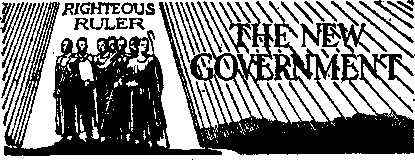
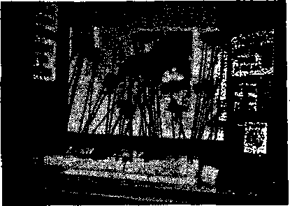
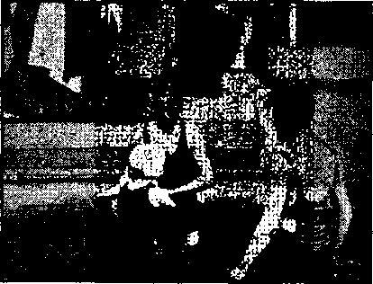
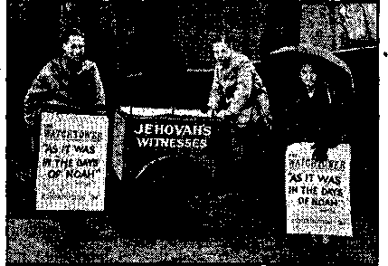
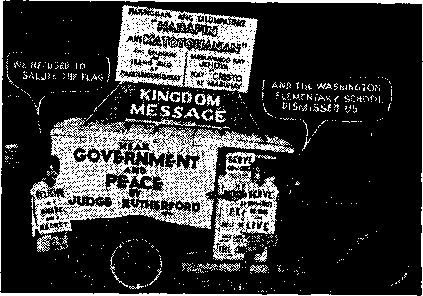
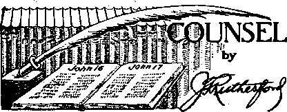

Detroit—the Biggest and Sweetest Convention 11
Counsel by J. F. Rutherford
Religious Governments versus The Theocracy 19
Somewhat Similar Conditions in France
Millionaire Hitler and His Lies
Hitler’s Adept Pupil, Goebbels
Britain Is Admittedly Religious
Activities Against The Theocracy
Conspiracies Against The Theocracy
British Comment
Published! every other Wednesday by WATCHTOWER BIBLE ANO TRACT SOCIETY, INC.
117 Adams St., Brooklyn, N. Y., V, S. A.
Editor Clayton J. Woodworth
Butlneu Manager Nathan H. Knorr
Five Cents a Copy
Si a year to the United States SI. 26 to Canada and all other countries
NOTICE TO SUBSCRIBERS
Remittance®! For your own safety, remit by postal or express money order. When coin or currency is lost in the ordinary mails, there Is no redress. Remittances from countries other than those Denied below may be made to the Brooklyn office, but only by Internationa! postal money order.. Receipt ot a new or renewal subscription will be acknowledged only when requested. Notice of Expiration is sent with the journal one month before subscription expires. Please renew promptly io avoid loss of copies, Send change of address direct to us rather than to the post office. Tour request should reach us al least two weeks before the date of issue with which it is to take effect. Send your old as well as the new address. Copies will not bo forwarded by the post office to your new address unless extra postage Is provided by you. Published also in Afrikaans, Bohemian, Danish^ Dutch, Finnish, Ihrenoh, German, Oreek, Hungarian, Japanese, Norwegian, Polish, Portuguese, Spanish, Swedish, Ukrainian; also special Australian edition in English.
OFFICES FOR OTHER COUNTRIES
England 34 Craven Terrace, London, W. 3
Canada 40 Irwin Avenue, Toronto 5, Ontario
Australia 7 Beresford Road, Btrathfield, N,S.W. South Africa 623 Boston House, Cape Town
Entered1 as second-class matter at Brooklyn* N. Y*, under the Act of March 3* 1S7&-
Why So Pious?
A Roman Catholic and a Scot were walking through the streets of London. When they passed Westminster cathedral the Scot noticed that his companion lifted his hat. He did so too. His friend observed, “You are improving—lifting your hat when you pass the cathedral.”
“Oh, was that the cathedral?” replied the Scot. “I thought it was the Bank of England.”
The Way to Get There
The traveler was on his way with his new high-powered ear, and stopped to inquire the direction from a farmhand. Pointing to an oxcart a little up the road, the man said, “See that cart there, Mister? Well, just follow that, and you’ll get there.”
Protection from Shock
The clergyman was in the hospital. He discovered on awaking one mornjng that the windowshade was drawn even though it was day. He inquired about this of the nurse; who explained, “There is a big fire across the street, and we were afraid you might wake and think you had died.”—Afrikaans Consolation.
Longer than Jonah
Ephraim: Did you know dat Jonah was three days in the stomach of a whale?
Rastus: Dat ain’t much. Mah uncle was longer den dat in de stomach ob an alligator.
Ephraim: You don’t say! How long?
Rastus; He’s dere yit!—Readers Digest.
The Spur of Necessity
The night was dark. The lights of the tourist’s car would not reach the top of the signpost, and the* tourist was undoubtedly lost. Spurred by necessity, he climbed the post, struck a match. The sign read, “Wet Paint.”
Vain Attempt
A colored boy was strolling through a cemetery reading the inscriptions on the tombstones. He came to One which read, “Not dead, but sleeping.” Scratching his head, the Negro remarked: ffHe sure ain’t foolin’ nobody but hisself.”—Clinic Magazine.
Not So Bad
“Hello, dear. How’s the pain in the neck?” “Ob, he’s out golfing!”—Labor.
CONSOLATION
“And in His name shall the nations hope.’’—Matthew 12:21, A.R.V.
Volume XXI
Brooklyn, N. Wednesday, September 4, 1940
Number 547
(In Two Parts—Part 1)
This article, approved in its entirety by Judge Rutherford, will be read with keenest interest by every subscriber or chance obtain er of this issue of Consolation. Read this part, but do not fail to obtain Part 2 in the next issue. Its warning about the “Abomination of desolation spoken of by Daniel the prophet” should be read by every person who has respect for God’s Word. This entire thing is .heading up now in such a way that there is no time to lose. Linder his last subhead, in Part 2, Elton Groves, the writer, calls on all spectators who desire salvation to seek immediate refuge in God’s Kingdom.
IN THIS hour of encroaching disaster America is desperately in need of true friends. Who are the real friends of the American people? Many claim that following their system, politics, or religion will bring safety to the people. How can such claims be tested"? How can they be proved as true or false? Certainly no propagandists’ views are to be accepted. There is but one true guide: the authoritative statements of Jehovah’s Word, the Bible. Jehovah is the fountain head of truth, and He is the author of salvation. It is therefore imperative that we consider the words of the Bible as applied to this day to discover who is for and who against the interests of the American commonwealth.
A consideration of the Scriptural prophecies and the supporting facts will disclose not only the real friends of the American people but also their enemies. The great Theocrat Jehovah and His King Christ Jesus are.the perfect friends of distressed humanity. It. is recorded that 'God so loved the world that He ,. sent His only begotten Son’ Jesus unto it. No Christian can deny that God’s love and friendship are boundless. This friendship is limited by the above text to those who believe on Christ Jesus as the Lord's provided Savior. In what category, then, must those be found who hate Jesus’ brethren and persecute them for Jehovah’s name’s sake? Are the organizations today, such as the Roman Catholic Hierarchy allied with the American Legion, and SEPTEMBER 4, 1940 ’ which organizations claim to be protecting the American people from Jehovah’s witnesses, actually doing our country a favor? Is it a favor to the Stars arid Stripes to induce its citizens to fight against Jehovah’s name and His people? Is it an act of friendship to cause one to be executed? Is it a token of love to persuade mobs, poisoned by lies, to set upon the faithful servants of the Lord, when such crimes will be punished by death to the perpetrators in the day. Jehovah avenges His people? Will the wealth and lies of Rome and her dupes avail them in the time of the Lord’s wrath ? Will her claim to be the Lord’s servant help in the least? The emphatic answer found in God’s Word is: T will destroy utterly the city which is called by my name,’ meaning “Christendom”, of which the Roman Catholic Hierarchy is the chief part. Do the people of this land do well then to heed the words of Catholic prelates or of the American Legion when they denounce Jehovah’s witnesses and urge that violence be done them? The Scriptures plainly state that if they do thus act it will be to their own destruction. Addressing these vicious ones the King now says: 'Inasmuch as ye have done it unto the least of these my brethren, ye have done it unto me.J Concerning Christ Jesus it is written: “This is the stone which was set at nought of you builders, which is become the head of the corner. Neither is there salvation in any other: for there is none other name under heaven given among
men, whereby we must be saved.” (Acts . 4:11,12) Is it not perfectly clear from these words that the action of mobs who have maltreated Jehovah’s witnesses in their native land openly insulted the Theocratic King by attacking His brethren who are performing His commands? Do the hirelings of the Papacy think they can fight the King and protect themselves against His wrath at Armageddon ? The answer is repeated hundreds of times in Holy Writ; and it is, The wicked shall die.
Thus is stated the unchangeable rule of Jehovah. The people of this land who are deceived by the Hierarchy, the American Legion or any other agency into thinking that Jehovah’s witnesses are foes of the country,’1 and hence act at the instance of such organizations to abuse them, do themselves much harm. It is to such people that are misled into unrighteous action that the Lord’s words are addressed: “Touch not mine anointed.” Those who advise “summary action” against the messengers of the King give bad advice. They are enemies of the people of the United States of America. The days to come will prove it just as the last dreadful year has proved the agencies of the pope to be the deadly enemies of the nations of Europe, which are now drenched with their own blood, betrayed within by their Catholic Fifth Column while battered by the pope’s champion without. The Hierarchy’s motto is, Ruij: or ruin. To follow them means ruin. They are fighting against the great Theocrat. So they have no vision of the Theocracy or Kingdom which the Lord promised would rule the world in righteousness. Both the blind guides and their followers are doomed to fall into the ditch, because “where there is no vision [or understanding of God’s purposes], the people perish”,— Proverbs 29:18.
There can be no doubt that the real enemies of the people are those who attempt to smear God’s message. Their fight is actually against the Lord, and every agency that they enlist in that attack on the Most High is. certain to fall at the hands of the Lord’s Executioner. What profiteth it a man if he gain everything the world has to offer, if he loses his life and the right thereto by fighting his Maker ?
Do the American Legion, the Veterans of Foreign Wars, and all the other super-patriots who are doing the Hierarchy’s dirty work think they can hide behind the American flag, when the Lord knows their hearts and their works? The Scriptures plair^Jy teach that every man shall be judged according to his works; and it is impossible'to deceive Jehovah.
The works of this gang, even though every effort is made by the majority of the press to cover up for them, appear plainly before men. They brag that, they are going to destroy Jehovah’s witnesses, who are the people’s true friends. They hate them because they expose the conspiracy between the Nazi dictator,, the Hierarchy, and America’s Gestapo, the Legion. The New York Times, July 15, 1940, publishes a part of a report of the American Civil Liberties Union which states: “An inquiry" of the Union’s correspondent in forty-six states made in the spring of 1940, showed agreement on the American Legion as the most active agency of interference with civil rights. The Legion has taken first place in this canvass continuously for several years. In only two instances was the Legion reported as opposing what may be characterized as Fascist movements.” Note in this connection that a former national commander stated that the Legion is to America what the Fascist! are to Italy. The Union further states that there is a community of interest between Legion, Bund, Ku Klux Klan and the Silver Shirts.
It is plain, then, that the American Legion is pro-Nazi in action, if not in open declaration. It is equally plain that they are antiGod andanti-God’s Kingdom, The Theocracy. The astounding record of this self-styled ‘patriotic’ organization has shocked law-abiding citizens, including some of its own members. Many writers have collected circumstantial accounts of these atrocities committed simultaneously in more than half the states of the Union in the past few months, and their edi-. tors have been too much afraid of the Roman Catholic Hierarchy or the Legion to publish them. We are fortunate to have one such article compiled by an unbiased writer and which was refused by his superior, not because it was untrue, but because they did not dare arouse the ire of an organization which has its headquarters in Rome. This article was kindly furnished through the courtesy of the writer and is quoted forthwith as information the American people are entitled to.
' JEHOVAH’S WITNESSES
By H. R. Southworth
. In forty-one states of the Union, during May and June, Jehovah’s witnesses, known for their insistence upon obeying the laws of Almighty God and their refusal to salute flags, their aggressive
CONSOLATION
publicity tactics, and their unremitting warfare against the Roman Catholic religion arid all other religions, were the victims of mob violence and police persecution. .
There is one clear case of interstate kidnaping from Mississippi to Louisiana. It is difficult to ascribe this nation-wide outbreak to jitters over the Fifth Column or to fears of a Nazi invasion. Indeed, the Witnesses, though frequently smeared as Nazis by their tormentors, are in reality staunch a nt i-Nazis and their work is forbidden in Hitler’s territories. Moreover, during these two months when the press records scores of attacks against Jehovah's witnesses, it mentions hardly a single attack on a Nazi group.
In nearly every instance the attacks on the Witnesses were led by members of the American Legion, which is not and never has been an antiNazi organization. Why should the pacifism of the Witnesses at this time so agitate the Legion, which is itself “non-interventionist” toward the present wart (“Let’s Keep Out!” writes Captain Eddie Rickenbacker in what the editor of the American Legion Monthly, June, 1940, calls “one of the soundest pieces of Americanism we have seen in many a month”.) Then how ^explain this breakdown of law enforcement from California to Texas to Maine, this orgy of American Legion violence against the members of a numerically, socially and financially unimportant body? Why?
The Witnesses themselves believe the Fifth Column excitement is being used against them by the allied forces of the Legion and the Roman Catholic Church, in the same manner that the anti-Nazi gag laws in Catholic-controlled New Jersey have been used almost exclusively against the Witnesses. (Here it must be noted that the Witnesses do not consider their movement a religion. “Religion is a snare and a racket,” declares one of.their slogans. Though Christians, they are not Protestants, and are at times the object of disorganized, sporadic Protestant persecution.) The Witnesses point out that the National Commander of the American Legion is a prominent Knight of Columbus and that the inner circle of the Legion is Catholic-dominated. It is true that since 1928, when the Catholic Chureh suffered a political disaster in alliance with American liberals, the Church has allied itself with reaction, has become super-patriotic, super-American. It works close to the American Legion and today Legion policy and Catholic policy differ on no important point. For example, they see alike ris-a-ris the European war, and both are willing to condemn fascism and not unwilling to practice it.
Jehovah’s witnesses constitute the only group in the United States that militantly fights the Roman Catholic Church. They “invade” a town with sound trucks, distribute literature, “work” a street playing phonograph records attacking organized religions, especially the-Roman Catholic Church’; if allowed, they enter homes and play their phonoSEPTEMBER 4, 1940 graph records and distribute literature. For years the politically entrenched Catholic Church has used its power to'harass the Witnesses and to restrict their activities by means of city ordinances and police regulations. When Judge Rutherford, one of Jehovah’s witnesses, broadcast from London on September 11, 1938, Catholics in the United States used both legal and illegal means to prevent his being heard by his many listeners. In New Orleans a policeman named McNamara cut the telephone wires when the speech began. The Right Reverend Peter M. H, Wynhoven, editor of Catholic Action of the South, commented: “It is indeed a source of deep gratification that notwithstanding the persistent efforts of the Witnesses of Jehovah, their three-day convention in New Orleans was frustrated. . Practically every large hall in the city was denied them. ... The chief of police’s office and the sheriff of Jefferson Parish unhesitatingly stepped in to stop effectively this insult to New Orleans.”
Evidence that this policy continues is seen in the cancellation of the Witnesses’ contract for the use of the Ohio State Fair coliseum for their main convention, July 24-28, 1940, In a suit in federal court for a mandatory injunction, the Watchtower Bible and Tract Society, the Witnesses’ New York corporation, names the Roman Catholic bishop of Columbus-, Ohio, James J. Hartley, and a Catholic priest, John Murphy, as those who forced state officials to cancel the contract.
The United States Supreme Court on May 20, 1940, decided that the Witnesses could not by law be restrained from distributing their literature or playing their phonograph records. The Witnesses were already planning a monster convention to be held in thirty cities on July 24-28 and this legal victory seems to have impelled them to greater zeal—and their enemies to extra-legal means to defeat them. This situation was further aggravated by another Supreme Court decision on June 3, which gave to school officials the right to force children of the belief to salute the flag. This unfortunate decision, coming at the height of the Fifth Column scare, caused many people to view with alarm the Witnesses’ refusal to salute the flag.
It is interesting that the first of the recent attacks took place on May 22, two days after the Supreme Court decision, at the town of Del Rio, Texas, on the Mexican border. For months the Mexican border has been pointed to by the American Catholic press as the probable port of entry for a subversive invasion. The United Press story on this mob action read: “An angry crowd of 400 persons, headed by former service men, escorted three Nazi agents to the city limits of Del Rio late today, and warned them not to return. . . . The three agents had been distributing Nazi literature in this Mexican border town for three days. Police said that yesterday they began forcing housewives to listen to pro-Nazi phonograph re-
cordings and leaving copies of a pamphlet entitled The Watchtower and bearing a swastika on the cover." The New York Times, which rarely prints a Catholic story without first checking with Catholic authorities, made no effort to cheek with the Brooklyn Watchtower address given in the U. P. report, but headlined the story “Texas Crowd Expels Nazi Pamphleteers". (Both the U. P. and the Times later corrected the story, but that hardly. explains its origin. This pamphlet was in reality an anti-Fascist, anti-Catholic publication called “Fascism or Freedom" and the swastika was a small drawing on a ball and chain, denoting Fascist slavery.)
In Glenwood, Arkansas, on May 25, three Witnesses were threatened by a hostile group and accused of being Nazi agents. The same charge was made against two Witnesses who were severely beaten by a mob in Sanford, Maine, on June 8. A Witness was tarred and feathered at Parco, Wyoming, on June 22, accused of having given the Nazi salute. A Witness writes (June 27) from Winnsboro, Texas, that the police are saying “a German spy delivers our literature every two weeks. They go so far as to say that he can’t speak English”. The New Orleans Times-Picayune of June 30 carried the following statement by Dr. A, C. Bryan, commander of the T. C. Carter, Jr., Post, American Legion, Meridian, Mississippi: “We, the American Legion, in co-operation with the police department, are making every effort to round up these ‘Witnesses’. It is the duty of every citizen to report these persons to the police. The literature being issued by members of this organization is printed chiefly in Germany by German printers and on German paper.”
The charge of distributing Nazi literature was brought against the Witnesses in Odessa, Texas, on June 1, and a “kangaroo court" that included many city and police officials and a Baptist minister tried to coerce them into saluting the flag. The Witnesses’ official report on this happening states: “At Odessa, Texas, about seventy innocent men, women and children were hauled into the courtroom by the sheriff and county attorney, held until midnight without food or water, and then the thirty-five men were packed into a small upper room for the rest of the night. During five hours from midnight they were brought downstairs, one by one, and grilled by the American Legion. Purposely deprived of food and drink until ten o’clock Sunday morning, they were then loaded on a truck and carried to the county line, delivered to a mob of a thousand, guided by and including the American Legion, who stoned and drove them on foot along the railroad right of way for over five miles. They were prevented from leaving the right of way to get water; a number fainted and had to be carried by their companions.”
The situation around Sanford, Kennebunk, Biddeford and Saco, Maine, seems to present a clear case of how the Fifth Column hysteria is being exploited, against the Witnesses. The population here is largely Catholic and the American Legion is strong. The meeting place or Kingdom Hall of the Witnesses in Saco was wrecked by a'mob in October, 1939, and when after months of fruitless searching, the Witnesses finally found another building, in Kennebunk, it immediately became the target for rock-throwing boys and midnight marauders. Warned that on the night of June 8 they were to be run out of town, the Witnesses called in vain for help from both local and state police. When hoodlums rushed the building after mid-, night, crying “Let’s finish those damned Jehovah’s tonight 1” two of the raiders were shot. Six Witnesses were thrown into jail and the next day a mob burned the Kingdom Hall, unmolested by the police.
Suppressing the long Catholic-Legion background of the case, the police played up the Fifth Column angle. “Search of the premises of the Kingdom Hall allegedly revealed the guns, maps and pictures of the Nazi and Communist dicta-tators,” wrote a special correspondent of the New York Herald Tribune. “The maps, according to police, ineluded one of Biddeford, important industrial center, with the huge plant of the Saco-Lowell shops, textile machinery manufactory, especially designated. There were also maps of Saco, Wells and Kennebunk, as well as other Maine coastal cities and towns.”
Five Witnesses are in jail in Harlan, Kentucky, on warrants signed by Mayor L. 0. Smith, a World War veteran, charging the men with “distributing un-American literature and propaganda detrimental to the U.S. Government,” The men are being held under ten thousand dollars bond each for violation of the State sedition laws, but officials have made the posting of bonds difficult for the Witnesses and the acting attorney for Harlan has said, “They are not entitled to bond, being held for treason and seditjon.”
At least nineteen attacks on Jehovah’s witnesses have taken place in Texas, a state that went Republican in 1928 rather than vote for a Roman Catholic, but where in recent years the Church has strengthened itself by an alliance with the most reactionary elements in the state. It was a Catholic-Legion mob led by Father Valenta, secretary to the Archbishop of San Antonio, that last August wrecked the San Antonio-city auditorium and injured seventeen people in breaking up a Communist meeting.
The effectiveness of the New Catholic alignment was graphically demonstrated in Dickinson, Texas, when Father Thomas A. Carney, priest of the Shrine of the True Cross, was arrested on complaint of a (Witness for directing an assault against Witnesses. The priest was defended by a prominent Protestant lawyer from Houston and the trial was officially observed by representatives of the American Legion from Houston, Galveston and other cities. The freeing of Father Carney, the
fining of a Witness for contempt of court, and the promise of a grand jury investigation of the Witnesses were cheered by the spectators. The Houston Chronicle (June 7, 1940) reported on Father Carney’s testimony as follows:
“Father Carney’s testimony was that he had seen the group in Dickinson Sunday and that he had walked over to the ear with ‘some of my boys’ to warn them to leave town. He said that when it became apparent that the group was not going to leave peaceably he walked back to his home, telling 'the boys’ to see that the group left town without distributing any literature or phonograph records. ‘I didn’t tell the boys to hit anybody,’ said Father Carney, ‘but as long as it happened, I’m glad that they did it. Those people deserve it.’ Father Carney read a prepared statement attacking the sect and Judge Joseph Rutherford of Brooklyn, its leader. ‘Judge Rutherford is a very dangerous man,’ Father Carney said. ‘He assails all religions with equal vehemence. In his opinion, the Catholic Church is the work of the devil, and Catholic schools are a danger to Americanism. Several years ago Burke [a witness] came to Dickinson with a loud-speaker attacking the Catholic Church, and 1 got him out of town then and without calling in any help. I am convinced that these people are anti-religious and un-American, and all this was in my mind when I walked out to their car. We did not carry out our intentions, but I will tell the court frankly that we intended to break those records and to destroy' that literature. 1 consider it a religious and patriotic duty to salute the flag and I think anyone who doesn't salute the flag is a traitor.’ ”
One of the most alarming features of this wave of violence is the complete unwillingness of local law enforcement officers to protect the Witnesses. The arrest of two men for arson in connection with the burning of the Kingdom Hall at Kennebunk stands out as the sole legal action taken by a state against the persecutors of'the Witnesses. Charges against both of those men were dismissed, however, “for Jack of evidence.” In many cases, particularly in Texas, law officers have been active participants in the violence. At Jackson, Mississippi, Jehovah’s witnesses—many of them citizens of the state— threatened by the American Legion, appealed in vain for local and state protection, and on June 27 were driven across the state line by a mob led by the head of a private detective agency, and placed in the hands of Louisiana Legionnaires, “They would not allow the women and children to toilets or to secure food. Several of the Legionnaires went ahead and at every town we were met by officers and ordered on,” writes the leader of the group.
The attacks are continuing. Typical of the field reports pouring into the Brooklyn headquarters of the Witnesses is the following from Mounds, Illinois:
“June 27: Gay Jen Stephens and wife, of West Frankfort, were notified by friends late Monday SEPTEMBER 4, 1940
night after returning from a study meeting that the police were looking for them. They both went directly to the police station, at which time they were both immediately arrested. This was between 9 and 10 p.m. There was no warrant out for the arrest of either of the above. They were both beaten about the face, knocked down, stomped on and beat with a strap. This resulted in Gaylen Stephens giving in to them and saluting the flag, and I could not find out if his wife did the same or not. However, they were both kept in jail. Mrs. Margaret Stephens was released Tuesday morning, June IS, but Gaylen Stephens was held until Wednesday-‘for protection and investigation’. He held a job as draftsman in a W.P.A, office, which job he lost.” ■
The American Legion shows no inclination to slow up its campaign against the Witnesses. Far from condemning the recent wave of IjCgion lawlessness, Rational Commander Raymond J. Kelly writes as follows in the National Legionnaire for July, 1940;
“We have been told that far-reaching suppressive measures against flourishing domestic ideological conspiracies might injure innocent people. In my belief the good of the whole nation compels summary action to be taken by our properly constituted federal, state and local authorities to stamp out in their entirety the activities of these subverted, irrespective of what may happen to their fellow-travelers or innocent by-standers. This is no time for quibbling. We must pull no punches. In my public utterances I have stressed the importance of American Legion organizations assisting and working through recognized law enforcement agencies. I see no reason for deviation from that policy at this time.”
A typical Legion conception of “assisting and working through recognized ■ law enforcement agencies” is shown by the following resolution (June 27) : “Therefore be it resolved by the George ' Hart Post No. 167 of the American Legion, Harrisburg, Illinois, that in the future no Jehovah’s witnesses or any other sect having similar beliefs shall in the future distribute any literature or play any recordings in the city of Harrisburg or surrounding territory, stating publicly that they will neither salute the American flag nor take up arms in the defense of this country in the event of an armed invasion. Be it further resolved that no Jehovah’s witnesses shall in the future solicit any further membership to their organization, either in the city of Harrisburg or any surrounding territory.”
The Legion’s national commander, Raymond Kelly, is now seriously considering the formation of a private army, unarmed but otherwise completely militarized, under the command of Kelly, and with Legionnaires filling all posts of command. This recalls the words of former National Commander Alvin Owsley who said in 1923: “Do not forget that the Fascist! arc to Italy what the American Legion is to the Fnited States.’’
The Department of Justice is concerned over the attacks and it is understood that a special eir: cular has been sent to all United States District Attorneys to take every possible step to prevent interference with the Witnesses' right to freedom of assembly. The United Press reported from Waxahachie, Texas, on June 3: “The town jail was crowded today with 90 prisoners—-most of them women—whom police and Legionnaires had rounded up as they handed out religious pamphlets.” When these people were brought before Federal Judge William H. Atwell, at Dallas, Texas, he said: “If the people of Waxahachie were attacking these [defendants], then the other people should be put in jail, not these. We have no law to make anybody salute the flag. Many of us believe the salute is the love that comes out of the heart. These men, women and children really salute it when they ask for the protection of our great government.”
The Witnesses have just been banned in Canada and there is no doubt that as we draw nearer to war our own tolerance for minority views will likewise diminish. However, we are not at war. The Federal Government would seem to have a clear right and duty to intervene in the case of the Jackson, Mississippi, kidnapping. But this is election year and the American Legion and the Roman Catholic Church together form a political power no vote-seeker can ignore.
Why does not the Detroit Free Press publish some of these facts, instead of abusing innocent witnesses to Jehovah’s name ?
This record will be used by the Great .Judge of the Universe as a testimony against the unrighteous combine of false patriots and religionists who have no more sincere love for the United States of America than a crocodile has for its prey. If the Legion venerated the flag as much as they profess, it would be well for them to urge obedience to the laws for which it stands. Certainly the American code of Statutes nowhere makes provision for mob violence, but, on the contrary, expressly forbids “summary action” of this sort advocated by National Commander Kelly. Our forefathers believed that loyalty to God was first. The Legion claims that one cannot be loyal to Jehovah and at the same time loyal to the United States. Will the people of this country accept this tyranny, or will they stand by the principles of freedom established in 1776 and written into our Constitution and Bill of Rights? The people of this nation have come to the parting of the ways. They must choose the Legion’s road to Nazism, with all the horrors of Europe duplicated here, or the road to The Theocracy, pointed out by Jehovah’s witnesses, which leads.to life under the protection of Jehovah. Between the two is a great gulf and the twain shall never meet. Let each man make his decision and remember that there is no road back from Nazism! The old adage “Abandon all hope, ye who enter here” is an apt warning to those who find the glitter of Nazi triumph attractive. No matter what the consideration was which may have induced the Legion to give their strength to the Nazi Hierarchy, it will be poor price for the penalty of meeting Jehovah’s Executioner! They will bitterly rue the bargain when their hordes are thrown back by Jehovah of Hosts, unable to see God’s Avenger, fighting fearfully against themselves in the black night of Armageddon. In this battle, not their money, but their blood, will pay for their crimes against the servants of the Lord.
The plain motive behind these attacks on innocent and loyal Americans is the suppression of fact. What is it that the Roman Catholic Hierarchy is so desperately anxious to conceal from Americans that she is willing to commit murder to silence the witnesses ? What is she trying to hide ? Have not the people a right to know, that they might decide for themselves what course to pursue? It cannot ; be denied that Americans are the best judges of what they wish or do not wish to hear. Propaganda is dangerous only when freedom of speech is dead. Hitler well knows that fact, and he learned it from his masters, the Roman Catholic Hierarchy. Ancient historians of the Roman Catholic Inquisition, which Inquisition tortured “heretics” to death for saying anything that remotely offended the Church of Rome, declare that this dread tribunal was the cemetery of information. Today only what is approved by the pope is the Catholic Ideal. All else is “heresy” and must be stamped out by threat, violence or death. Hitler has done her work well in Europe. What, then, must the Legion, servant of Rome in this country, prevent Americans from hearing? The answer is, Jehovah’s message which exposes their hypocrisy.
In many places in the Scriptures is foretold the alliance between religion and politics. Religion is represented today chiefly by the Roman Catholic Hierarchy; and the totalitarians, such as Hitler, dominate polities. How do the facts which are known today disclose this alliance? Since the throttling of free speech is so necessary to Catholic Action, it is important to consider the responsibility of the press in fostering this coaiition. Catholicism must not be permitted to lose caste in America by linking it with Nazism, according to Hierarchy plans. America must be deceived until she can be crushed, is to follow Catholic tradition of old and all time. Consider now the facts which prove that the Bible prophecy foretelling this coalition is now in course of fulfillment.
Strange as it may seem, Hitler has announced his commission from the pope to crusade for the “Holy Roman Empire”, or world domination-by Catholicism, which some Nazis describe as the Catholic Revolutionary movement. He is not the first German to raise the Papal banners in bloody conquest. King Charles fought Luther and the Reformation-ists in the name of the pope. But this old Catholic empire, the so-called “Holy Roman Empire”, came to an end with the signing of the treaty of Westphalia, signed in Munster, in 1648. According to The Converted Catholic, issue of May, 1940, “Religious tolerance officially began with the Peace of Westphalia in 1648, which put an end to the sovereignty of the Church Of Rome and the papacy’s control over the nations of Europe. It must be remembered that this treaty was concluded between the Catholic and Protestant peoples of Europe, and sworn to by their respective princes. . . . But the Vatican would have no part in the agreement, and has acted ever since as if it never existed or had never been signed • and sworn to.
“The treaty was really contained in two pacts, one at Osnabruck on August 6, 1648, and the final one at Westphalia on October 24, 1648. They made effective and final the cleavage between the opposing cultures of Catholicism and Protestantism, and started the world on the road to true tolerance—until the rise of Fascism.” Pope Innocent X, then in office, issued a very severe bull denouncing these pacts and declaring them “void, invalid, iniquitous, unjust, damnable, reprobate, inane, and altogether lacking in force . . . they must, therefore, be forever held as if they had never been issued, as never existing, and as never made”.
Therefore when Hitler recently made the assertion that he intended to force Britain and France to sign peace terms at historic Munster, in Westphalia, and stated at the time that the place was significant, he identified himself as the pope’s instrument to recoup what Rome lost in the Reformation ! The Catholic church never forgets! The Thirty Years’ War, which was settled adversely to the Papacy at the Treaty of Westphalia, was a setback 'which Rome never forgave. She merely waited for a champion, a crusader to wipe out this insult to her position of power. The Reformation must be remembered only as a momentary shadow in the forward march of militant Catholicism! Nor was Hitler the first warrior she asked to re-establish her power by the sword. It is interesting to note that the New York Times, in a scathing editorial February 8, 1887, denounced the agreement between Bismarck and the then pope, which agreement presaged the bloodshed of ,1914. According to The Converted' Catholic it was “this evil use of any means to justify the political ends of papal power that drewr the ire of the Tinies, which begins its editorial with the words: ‘All is grist that comes to the mill of Rome.’ ” It is to be regretted that the New York Times has lost the courage it possessed in 1887.
The next champion to be asked to re-establish her empire by the pope, and still with the purpose of wiping out Westphalia, was Kaiser Wilhelm, of first World War fame. Again quoting The Converted Catholic:
When the Kaiser visited Pope Leo XIII in 1903, the Pope made a plea for Germany’s support of the Holy Roman Empire, and said that Germany would have to become the ‘Sword of the Church*. Wilhelm did not agree to this, and pointed out ‘that the ancient Roman Empire did not exist any longer, and that political conditions had changed. But the Pope did not abandon his point of view*.
Hitler’s aims, and accomplishments, are in line with this. He has persecuted only the liberal elements in the Catholic Church in Germany and Austria. And the fact remains that the Vatican helped him to abolish the liberal Catholic Centre Party, threw its might back of Hitler and made a Concordat with him. It rejoiced at the death-blow to liberalism in Germany and all central Europe. To this day, it has not attempted to excommunicate Hitler, nor has it renounced its concordat with him. Its present peace efforts, if successful, would be to Germany’s advantage. It is obvious to anyone who gives thought to it, that the Vatican’s intensive peace campaign, after contributing so much to the victories of Nazi-Fascism since the Lateran Accord, is but a further effort to help Hitler and Mussolini hold what they have gained by “blitzkrieg” and rape.
Hitler may have disappointed the Vatican in many things, but it still looks hopefully to him ss the one most likely to accomplish in its favor what the Kaiser refused to undertake.
In line with this is the statement, by the Fascist organ Lavoro Fascista (February 11, 1936)“The struggle against Fascist Italy is a struggle against the Catholic Church. ‘Silver Charlie’ Coughlin, to use the nickname given him by New Masses, has been likewise described as doing the will of Rome by the Jesuit organ America.” “Hitler’s early conquests in Austria and Czechoslovakia were applauded as ‘a natural readjustment in Europe’ by the Catholic Justice Herbert O’Brien in New York, in an article featured in the New York Herald Tribune of March 29,1938. Needless to say, his opinions are not his own, but were obviously dictated to him by official Catholic authority,” to quote from The Converted Catholic, May 19. The Catholic bishops of Germany and Austria have repeatedly applauded the advance of the arms of Hitler. A Catholic cardinal approved the traitorous action of Leopold of Belgium; and according to the New York Times of July 4, “it is believed in Vatican circles that the controversy between King Leopold (a staunch Catholic) and the exiled (popular) Pierlot government of Belgium is about to,end, in part because of intervention by the Vatican.”
It must be remembered that the chief countries that broke with Rome at about the time of the Treaty of Westphalia, signed in Munster, were the Scandinavian countries, England, Holland and parts of Germany. France was later blacklisted by the Papacy because Napoleon jailed two popes. America was also the haven of Protestantism and thoroughly hated. Thus can be seen just what are the objectives of Hitler. Why does not the Detroit Free Press publish some of these facts, instead of vilifying people who are doing a service to America?
Hitler is prosecuting a “holy war”, to destroy “heretics” and restore the Holy Roman Empire. On this point says the San Francisco Chronicle, May 21, 1940: “[Hitler] seems determined that if he forces France and England to their knees he will make them send their representatives to historic Munster, in Westphalia, to sign on the dotted line.
“Munster is symbolic for Hitler, Not content with wiping out the last vestiges of the Versailles treaty which ended the World War, his mind goes back to 1648, when the Germany of the Holy Roman Empire was broken into powerless bits by the Treaty at Munster which ended the Thirty Years’ War” [“a struggle between Protestants, and Roman Catholics” —Encyclopedia Britannica].
As for the truthfulness of this evidence of the Rome-Berl in-Pap al alliance, the facts are fully supported by Pierre Van Paassen in Days of Our Years, George Sei des in The Catholic Crisis, G. E. R. Gedye, and many other Protestant and even Catholic journalists. It is thus easy to see why the Legion opposes Jehovah’s witnesses and favors Nazism. Perhaps the Detroit Free Press has no impartial journalists on its staff. Maybe it is merely ignorant of these facts.
Further consummating the Papal plans to get America is the Hierarchy’s establishing relations between the United States amd-Vati-can City. Vatican Cite has a population of about 2,000 people. Why does America make such a point of having relations with, this minute realm ? It is not for this little bit of ground that this relationship is formed, but in order that the pope might have control of the fifteen million Catholics in the United States of America. This is made clear by Gilbert O. Nations, writing in both the New York Times and The New Age, June, 1940.
In conclusion the following facts are repeated: Hitler is admittedly a Catholic and so describes, himself in the German Who’s Who (and the Detroit Free Press will never tell you this); he has signed an agreement or concordat with the pope to bring all the world under the yoke of Catholicism; the American Legion and the American press have been assigned the job of putting America under this -Roman yoke; Jehovah’s witnesses are the patriotic friends of freedomour forefathers shed their blood battling for the principles for which Jehovah’s witnesses now stand; Washington and Jefferson fought for these very principles and they were written into the Constitution and Bill of Rights, and the flag was made a symbol of thus freedom. Today Jehovah’s witnesses alone of all Americans continue the battle of the signers of the Declaration of Independence. By its deeds the American Legion demonstrates its hatred for the democracy it professes to protect. Jehovah’s witnesses have a message from Jehovah which is the most important information for the public welfare today. Hear them if you would live; abuse them if you would be killed by Jehovah!
(To be continued)
THE newspapers of Detroit said that the convention of Jehovah’s witnesses held in that city July 24-28 had an attendance of 45,000. They ought to know. That makes it in point of attendance the largest convention the witnesses ever held. Judge Rutherford said it was the sweetest convention. He ought to know. He has been at them all. The greatest blessings follow the greatest trials. Pentecost followed the death of Jesus, Mordecai’s exaltation was just after the threat against his life. See Esther 5:14;6:1-14.
In June Jehovah’s witnesses were in dire peril; the burning of their homes in Maine, the smashing of their automobiles in Illinois, tar and feathers in Wyoming, destruction of furniture in Maryland, wholesale imprisonments and beatings in Texas, Arkansas, Oklahoma, California, and shooting with intent to kill in South Dakota, and a reign of lawlessness throughout the country. All this followed ■ only a month later by the greatest and most blessed convention ever held. How like the great and good Jehovah God I There were 1,643 immersed at Detroit alone.
It looked for a time as if the witnesses might have to meet “out under the stare”, said one of the speakers. But the Lord provided a good place and a large. Convention Hall, Detroit, a succession of huge halls, interconnected, all on one floor, occupying perhaps two good-sized city blocks, was well suited to the purpose. The Eastern Star Temple, two blocks away, was filled. The overflow was taken care of at Trailer City, where 2,900 of the con-ventioners made their home.
Outstanding features were Judge Rutherford’s talks. One of these summarized the presentation on the ‘Times and Seasons’, which appears in August 1 and 15 and September 1 issues of The Watchtower. His principal address, “Religion as a World Remedy,” will receive attention in The Messenger. When the convention opened, and prior to Judge Rutherford’s opening address, it was explained to the audience that he had been a very sick man, and that his presence with them at the convention was a miracle. But both the addresses above referred to were given with all the zest and fire and eloquence that have endeared him to all who love Jehovah God.
Another prominent feature of the convention was the judge’s new book, Religion.
Consolation suggests that the politicians and others who have been clamoring for “more religion” are in a fair way to have their prayers answered; the first printing is 1,000,000 copies. See page 25.
The new phonograph made a great hit, and especially the way in which it was demonstrated. In each convention hall, as the description was given, the mysteries of this new vertical type, carried by its own handle, and housing books, booklets and a package that looked suspiciously like a sandwich, were shown by witnesses who had been trained for the job.
There were sub-conventions at Boston, Philadelphia, Atlanta, Tampa, El Paso, Kansas City, Des Moines, Duluth, St. Paul, Boise, Long Beach, San Jose, San Diego, Medford, Seattle, Spokane, and Honolulu.
A pioneer from Montana went to Sioux Falls to attend the convention there. Finding the city fathers there had made a mental surrender to the boys in skirts she w’cnt on to attend the convention at Fargo. There the fifth column clergy are the bosses; so she went on to St. Paul. There the mayor and the city attorney had refused the use of the city auditorium (and both have since lost their jobs), but the manager of the convention hall retained his manhood and self-respect, even though a priest from Minneapolis did call up and demand that he cancel his contract and expel the witnesses. The police department of St. Paul was A-l. It was overhauled some years ago, and it would be a good thing for most American cities if they would also have a periodical housecleaning.
At Medford, Oregon, the witnesses had no trouble getting the armory, but nobody would let them have seats, so they made them themselves.
Boston, Massachusetts, birthplace of American liberty, cheered faintly as its heroic police, Gallagher, Flaherty, and Dennis Collins, arrested S-year-old Irene Smith and 24 others, 12 of -whom were children. Richard Judson, a boy of 13, arrested by Fitzpatrick, jailed over night, was described by the clerk of the court as “as fine a boy as I ever saw and I would like to have a dozen like him”. See The Messenger for further news.
। In Clergy-ruled Quebec
♦ Believing it would be of interest to you, I have set out below a general report of the attempt of the enemy to disrupt the work of publishing the message of Jehovah’s Kingdom herfe. The report is confined to the first three months of the current fiscal year, October, November and December. A large part of these proceedings were carried on in courtrooms wherein the dominating decorative (?) theme was the crucifix, and which proceedings took the form of religious inquisition. The three focal points of persecution are the cities of Montreal, Sherbrooke and Valleyfield.
In the three months mentioned above, hardly a day passed without some of Jehovah’s witnesses’ being picked up by the police and hustled off to the local police station for “investigation”. This is usually a pretext to get the publisher into the station, where the minions of the law try to intimidate him or her by threats of arrest, imprisonment or even physical harm. On these occasions the witness is usually relieved of phonograph and literature.
Between October 1 and December 31 14 publishers have been formally charged; nine under the Montreal by-law proscribing “selling without a license” and five in the vicinity of Sherbrooke accused of being “parties to a seditious conspiracy”.
Two witnesses charged with selling without a license were sentenced to two months in prison. There was one acquittal on a similar charge in Montreal North. In connection with these and previous cases the witnesses were required to appear in court on 38 different occasions. All told, 61 publishers are at present awaiting trial in the Province of Quebec, 34 on charges of seditious conspiracy, 2 for pub. lishing defamatory libel, and the remaining 25 for distributing without a license, “displaying placards” or “selling without a license”.
Of outstanding interest was the trial of Arthur Titley on November ■ 27 to 29, on a charge of being party to a seditious conspiracy. At the outset the Crown prosecutor was heard giving a whispered warning to a press representative to “not give these people too much publicity . . . that’s what they are looking for”. Perhaps that accounted for the sparsity of information in the press regarding this case, but certainly the court received a great witness during the-trial.
The book Knemies was the principal exhibit and it was a treat to hear the prosecution’s “expert” witnesses reading aloud from it the portions which they considered “extremely seditious”. The “experts” were a Roman Catholic priest, an Anglican canon, and a Catholic University professor. When the Anglican clergyman finished his testimony, part of which consisted of a slanderous attack on Judge Rutherford, referring to him as “a spider weaving his web”, he sat down beside his Roman Catholic co-religionist and whispered, “I hope I didn’t spoil anything for you.” The picture on page 192 in Enemies was brought up, depicting the harlot riding the beast, and the priest, who sat beside the Anglican canon throughout the trial, was heard to say to his confrere, “I don’t think that is in the Bible, is it?” The other, after a few moments’ reflection replied, “Yes, I think it is, but not like he is explaining it.” (H. L. Stewart was telling the court how the prophecy applied to the Roman Catholic Hierarchy.)
In his defense before the court Mr. Calder, K.C., pointed out very clearly the position of Jehovah's witnesses, and how closely they followed in the steps of the early Christians and adhered to the truths of the Bible. At one stage he challenged the clergymen to cite one scripture in the Bible in support of “Purgatory”. The mighty men of Babylon could‘not say a word.
My impression was that in his address to the jury, the judge (Mr. Justice Wilfred Lazu re) followed closely the Crown prosecutor’s line of attack and, far from assuming the role of “Prisoner’s counsel”, he displayed an attitude of religious prejudice.
We have been reliably informed that in all the Catholic churches in Montreal a sermon has been preached in which the people have been informed that Jehovah’s witnesses are Communists and /should be detained in the homes by some means until the householder can get in touch with the police department and inform them of the whereabouts of the witnesses. —■ , Quebec. -
Baptism of Theocracy publishers, Alanila, Philippine Islands
2’/j Well-spent Hours
♦ 1 find out it pays to use the doorstep setup. One morning 1 ran my “Snare and Racket” record, by holding my phonograph on my arm by the side of a house. Just before I ran the lecture the man told me he wasn’t religious and didn’t care to listen, but after hearing the lecture he agreed it sounded good, also remarked it was a good way of carrying our message, by phonograph.
I then presented the bound books spoken of on this record, but he said he didn’t eare to read. So then I asked him if he heard our lecture from New York—“Government and Peace.” He replied “No”. Then I gave him a brief outline of what happened while it was being delivered, and then I asked him if I could call and play the recordings of this lecture for him. fie replied that I could, but for me not to go to any trouble, as he was always working. I got his name and house number and bade him good-bye.
In three weeks’ time 1 called back, and met his wife at the door. I asked for Mr. McConnell, but she said he wasn’t home but she was expecting him any minute, and asked me to come in. He came home in a few minutes but, was too busy to spend any time with me. I asked him if he ever saw a march in this city SEPTEMBER 4, 1940 carrying the information that religion was a snare and a racket. Ue said “Yes”. So I gave him a Kingdom News No. 5, telling him that this would explain why we carried on such a march. 1 bade him good night and added that 1 would call again later.
Three weeks more passed and I (‘ailed again in the evening. Met Air. McConnell at the door and asked if he would like to hear my lecture. In reply lie said, “Well, come in and get it over with.” So 1 entered the hall, took off my rubbers, and just then he turned and asked his wife if she cared to listen to this lecture. She said “No”. So then I didn’t know what to do. Air. McConnell scratched his head, looked at me, then looked at her and back at me again, replying to me to come to the kitchen.
Both of them were standing at the stove when I entered. Right then she was real snappy with me and didn’t care to have me, and asked me quite a few questions. Asked if this was technocracy, polities or religion. I then told her “No”, and also added that religion was of tiie Devil. She then asked if this lecture referred to Christian teachings. I replied that it refers to Christianity, which refers to Jesus’ own teachings. She then said I took her up wrong about religion.
13
At Kingdom hall, Belfast, Ireland, a large n^ap of the frorld 10 fixed at the.back of one window and different-colored ribbons connect each country on the map with a card at the front of the window. On these cards is printed the'year's report for the work done in 1.939 for each particular country. This has aroused great Interest, and from the remarks made by people passing by we find that they are surprised and impressed by the tremendous work that Jehovah has had done by His little army of witnesses.—Robert Anderson.
Then I asked again if they would care to listen to the phonograph, also stating I didn’t want to impose on them if they didn’t care to hear it, and wouldn’t call any more. Hr. McConnell then asked me how long it would take. I said that as soon as he didn't care to hear any longer it was O.K. with mo. 11 is wife mumbled that she never got any good out of listening to anything like this. Mr. McConnell said, “Play one record and I’ll tell you what I think of it.” Also he said he wanted to listen to a program on his radio. So I played the first record'of “Government and Peace” and asked him if he had any question on what he had heard. Ho said I haven’t heard enough. I then said, “You better listen to your pro-’ gram on the radio.” So he did.
After this we had another debate and I still asked if he cared to listen any more. He then said, “Go ahead, play it, so we can get rid of you.” I continued up to record seven. By this time his wife cooled down and began to ask questions (so many it would take too long to write them out). She was going to make me prove with the Bible some of my statements which I had made about the clergy. I didn’t have a Bible with me and she brought me her prayer-book. I said, “This isn’t a Bible; it’s a prayer-book.” She didn’t seem to know the difference; then went and got a Bible.
By this time it was more interesting, and I showed her how' she could prove from the Bible various statements that this booklet Government and Peace has made. By this time their heart condition was changing and they welcomed me back again as soon as I could to start a Model Study.
This all took place by making a back-call from a doorstep setup. There were two and a half hours well spent. I bade them good night, stating I never received the truth overnight and couldn’t tell it all to them overnight. This was sure the Lord’s direction on this part of the service. —, British Columbia.
Back-Calls on Foreign-speaking (Canada) ♦ For two years or so the friends in a Saskatchewan company, all English, have been
Immersion of young Jonadab at Belfast, Ireland
running the Ukrainian “Exposed” and “Religion and Christianity” series for the Ukrainians that were ,willing to hear them. Some have heard the series ones, others twice, and some even more. The people were willing to hear them, and the friends were willing to play for them.
When the letter from Judge Rutherford dated January 20, 1940, was received, urging the publishers to redouble their efforts and especially increase the back-calls, not being able to go out in the country, it being winter, and because of lack of conveyance, they again called on their Ukrainian friends with the series and were very ■welcome.
During my visit in this company, being able ' to speak Ukrainian, I arranged for a back-call on a Sunday evening and asked the man to invite some of his friends that like the truth. On my arrival the small house was packed full, far more than I ever anticipated, and all were eager to digest every word that was said. I put on the record which dealt with the “soul” and went over it together with the Bible and the Model Study booklet, which I had to translate as J went along. The audience of 35 were very attentive, and, when the meeting was over, expressed their gratitude for such opportunity, that the Bible is true, and that they were eager to learn more.
The success of this back-call was due to the foundation laid by the friends back-calling and running the lectures over and over. This proves that the lectures can be heard time and again with good advantage to the attendees, and that it is never too much nor too often to call on the interested ones as long as one can manage to do so. The Lord blesses our efforts and brings the increase.
The Salvage Corps
♦ Recently on a Sunday morning I went to the far end of a street in our unit, to make calls on the way back. At the first call I saw a police cruiser, the officers in which seemed to be watching me. As I was making my fourth call their car drew up to the curb and the driver called and asked me what I had and what I was doing. I told him I had just knocked on the door and would explain in a moment. No one answered, so I went out to
Theocracy publishers, Enfield, London, liquidating their obligations
the ear and told the officers I had the message of God's Kingdom and was preaching the same from door to door. One asked me if I was one of Jehovah's witnesses ; to which I replied in the affirmative. He then said that if anyone threw me off a veranda I could give them a call and they would return and pick up the pieces. As the car drew off we all laughed, and I went on to my next call. -------, Ontario.
Church Census in Eire
♦ The Roman Catholics of Eire comprise 93.4 percent of the population. The result of the last census shows the following numbers of persons who claim to belong to the various religious bodies in Eire:
Jehbvah’s witnesses (not religious) 30
Roman Catholics 2,774,000
Church of Ireland , 145.000
Presbyterian ’ 28,000
Methodists ’ 10,000
The little flock is at the top for obvious reasons. From 1926 the Roman Catholic population has increased 0.8 percent, while the Protestant denominations decreased 11.9 percent. The Jews and Jehovah’s witnesses have shown a marked increase. No doubt many persons comprised in the above figures are in heart sympathy with us.
In Dublin there is a section of the town populated largely by Jews. These have lately been visited by two pioneers, and they report that the Jews are hearing the message of Messiah’s Kingdom with great joy. The majority-visited so far have taken literature, principally the book Jehovah, promptly, because they realize that Jehovah’s witnesses are their friends, and because both are being persecuted by the same class today. The rabbis tell them that some great event is to happen in three hundred years’ time. That is poor comfort for the present generation of Jews, but God’s message given to them by Jehovah’s witnesses
Manila, Philippine Islands, educational authorities will educate conscientious little Christians only if they agree to put the State ahead of Almighty God and His Commandments.
makes their eyes light up -with joy. The other dpy a Jew said that Judge Rutherford tells the truth when he says all religious systems, including the Jewish, are practicing rackets.
It is heart-rending to see the sorrow exhibited by the Jews when speaking of.the persecution of their friends and relatives in Germany and Poland, but the present-day message of the Theocratic Government has renewed their hope in the Messiah. ■
The Protestant primate of all Ireland, Archbishop Gregg, said in an address lately that all religious systems in Eire are very tolerant toward each other. Certainly they are. That is why they put two of Jehovah’s witnesses in Dublin’s Mountjoy jail, because they are not connected with any of their religious systems.
Some of the Protestant clergymen continue to urge their parishioners to burn the Watch Tower publications, they not realizing that Revelation 17:16 shows that Jehovah will recompense their iniquity by turning the tables on them. . .
In a quiet way the “other sheep” of the Lord, penned in the Roman Catholic, Protestant and Jewish systems and institutions of Dublin, are getting fed, for which we give thanks to the great Provider.—J, H. Corr, Eire.
Witnessing in France .
♦ Some French witnesses, so new in the truth that they had never attended a single meeting, are now in military prisons because un' willing to make any eompromisewith Satan’s organization. Many witnesses have been interned and all foreign persons must have travel permits to move about. Visits to Jona-dabs are difficult, hut are made, and the Jona-dabs have much literature of God’s kingdom in their care. The Roman Catholic Hierarchy is now in full control in France, and the press yaps like an obedient cur behind it. The witness work still goes on; some officials admit its truthfulness, and one lieutenant of gendarmes, when told of the Kingdom, said, “May it come quickly.” Many persons of good will are taking their stand for the Kingdom.
Does Your Wife Love God?
♦ Does your wife love God? If so, have her locked up in an insane asylum, because the only really sane people in the world are those that believe God tortures people either eternally or at least for a few thousand years in “purgatory” (?). A man in Ohio (name and date of paper omitted by sender) had that kind of wife and had her committed to the Dayton state hospital for the insane. And then Victor Schmidt, attorney for Jehovah’s witnesses, the mean thing, went and got her locked out, Jehovah’s witnesses from all over southwestern Ohio came to the entertainment, and now this mother is back earing for her two little ones, and her hubby, who got her locked in, doesn’t know what to do about it.
New York Times
♦ If you think there is anything fair, courageous or honorable about the New York Times you might do a little thinking about the following correspondence, which speaks for itself.
7HX3 UIPORTjIHT lEFTBRt*-
T* tti« Editor ttJi Vtw Torfc Tl*4*
Sir,
?hl> •Jralig I Ttkd th* nrtlel* in th* Tics** fegtrilag th* r^nlricn of thr«* fifth Calian frC® Ric, Ymt, in yo* nn that th4at
patfpl* **n hit *S*ut* tsd nnbit* th* J*h4v*ttt* <■«*««■ ***t? »hw* La * Mahtf of tbl* srgMtl ratio* 1b lay off lea and frra h« ti*< J t*ld tt* it asiu that thia it a pl*a* of had reporting. Th*ir pnht 1 oaticv 1* ull*d th* frt*ht*w*p *b4 it it f«liiLrt«d at 117 Adur 9tr**t. Vraoklys, Th* Idoldant itnik h* la lie* with th«ip ■nch-pdblLcft*d attltuda toward MlutiB< th* ila< ajrf th* *lo**a ’’BaUgi** !■ j*ur nnny" eemapuda thflT b*Il»f that vr*a«nt*d*y r*llgioalrta an ia th* mb* ctttjary with th* Ph*rla**a of Chyl*t'a tla* that r*ll^ian 1* n*t Chti*ti**L*y, Th*y Bb* ‘phOBugraph raeorda tti*ir W*rt *jtd T b*T* a**n on* *f th* Lt
paqhlst* with * vnatlk* oh th* aovtr, bdt it r*pr»int*d death and ala * f*r whatever eaa h* ch*r£*0 »f*ibat th*** ptopl* tbofr e*Tt*lnly ar* not yro-Rail. 1 have raad noddnnt* La th* Tine* *f atabBri *f th* tut la CtrtiMj harlAf b**» *>t<eiit«d by
Apart fro* th* Inhtaiic* of aaklu-f lh«*» people cmt to th* met «n>«*lt* fro* what they are, think of th* Aaoaf* dose to jla*?l**. Vulaae th* cltltV>* *f D*1 filo wort knowingly aceaiiag thn vtajuttlp it w»* indicative Of a wild atat* Of kyaiatLa, whl-cb. it It epr«adif will *nr*ly lead Ajaorio* t* dietator. Vow, if ever, w* Wat h* tool and noa* of <4 ahnld l*nd hln«*lT t* treating panld. Certainly you ahwld exaatne th* facts and If they ar* *■ I have ahnld 4o ynr Mat t* quiet th* C*ar« you hav* *r*g**d, ThL* L* b* Ordinary ft'Jpw, Aaarle* 1* in dug*?.
RECEIVED TEIS COWARDLI REPLY r— Hem Jotic ®im»» “*U TU >m tw, Ite « Al*-
TtUSS 6QUAJLE, XEW YOSlX
(MZte_
hrtfaur dcllant
V«at Itth Str**t JFw Tort
Tte Mu, nprii |W 4. ehoMIsi a ate mUabb for paMiuliaa b Tk K*w T*rfc Tkw
ft i, ttfatuab Uli & f *nd *f **ta fet piHetdta «i Ltkn u it w*n Iki jniay 1**^ T*ki wi Bitnit k* nbuwi. .
Africa (West)
♦ The literature that was shipped to us a few months ago was not allowed importation, and our application to have them re-exported was refused. Not long after the publications were destroyed an earthquake occurred, in which Accra, the place where our literature was ordered to be destroyed and burnt, suffered more than any other town on the Gold Coast, and many of the Government buildings were badly damaged.—1940 Yearbook of Jehovah’s witnesses, page 98.
(To be continued)
THE only hope for mankind, God’s kingdom, does not wait Upon the conversion of the heathen world by religious clergymen and missionaries. Such have said; ‘"When a man- becomes a Christian the Kingdom is set up in his heart; and when all arc brought to Christ, then the Kingdom will be fully established, because Jesus said, at Luke 17:21, “The kingdom of God is within you.” For this reason the church must convert the world, that the kingdom of God may fully come.’
That argument, based on Luke 17; 21, is wholly wrong, and is proof that those who thus argue are entirely ignorant of God’s Theocratic Government by Christ Jesus. You will note by reading the context of Luke 17:21 that Jesus was speaking to the Pharisees who demanded to know when the Kingdom would come. It was to them, His enemies, He said: “The kingdom of God is within you.” We know that God wnuld not set up His kingdom in the hearts of His enemies. The Pharisees claimed to represent God, and they were the clergy of that day, but Jesus repeatedly told them they were hypocrites and sons of the Devil. Read the twenty-third chapter of Matthew and note the scathing denunciation that Jesus laid upon the Pharisees; note His words in John 8: 42-44, in which He told them they were of the Devil. There must be something wrong, then, with the argument of teachers of “Christendom” that the Kingdom is set up in the hearts of men. •
If your Bible has marginal references, note that the marginal reading of Luke 17: 21 is: “The kingdom of God is among you.” The Emphatic Diaglott and also Rotherham’s translation read the same way. The plain meaning of the words of Jesus is this: . Shortly after Jesus’ temptation in the wilderness Jehovah made a covenant with Him to give Him the promised Kingdom, and He anointed^ Jesus with His spirit to be the King whose right it is to rule the world in God’s due time. Jesus, therefore, from that time forward could properly say to those about Him: “The kingdom of heaven is at hand”; meaning that He, Jesus, was the anointed King or Ruler and He was then on the earth amongst the people, including His enemies. When the Pharisees came to Him, thinking they would catch Him in His words, He said to them, in effect: ‘The Kingdom is among you, or in your midst, because here I am standing, standing among you, and I am the One anointed of Jehovah for the Kingdoni.’ The Pharisees understood what Jesus meant, because they afterward accused Him of sedition by reason of His claim to be the King. -s
The counterparts of the Pharisees are found amongst the religionists of “Christendom” today. These not only have given a wrongful meaning to Jesus’ words, but have assumed the burden of converting the world, saying that the kingdom of God can never come until the denominational churches bring the people into the church and robe the earth in the moral achievements of man, and that then Christ will come and visit the earth. Their conclusions are entirely wrong and very misleading. Christ Jesus, now a divine spirit Person since His resurrection, has already come and the Kingdom is now among you. This can be said today with stronger force than ever before.
Shortly after Jesus spoke to the Pharisees He was killed, was resurrected, and then ascended into heaven. Since then His faithful followers have looked for His coming again. In A.D. 1914 the “times of the Gentiles” ended and Jesus’ period of waiting at God’s right hand ended, and then Jehovah God sot Jesus, His anointed King, upon His throne to act. (Hebrews 10:12,13; Psalm 110:1,2) The Scriptural proof is supported by the world ,war of 1914 and the other foretold incidents that followed. (Matthew 24:7-15) In 1918 Jesus Christ, being present, exercised His power and began to gather together unto himself the true Christians who are wholly devoted to God and to His kingdom, separating them from the religionists of “Christendom”, and the judgment of all professed followers of Christ is now in progress.—Malachi 3:1-4.
The next great act of the anointed King of Jehovah will be to destroy Satan’s organization in the approaching battle of Armageddon. Therefore the people of the land need to be told over and over again this truth, because of its great importance, to wit, that the kingdom of God is now among you. That is the reason why men and women are going from house to house daily, and particularly on Sunday, delivering this message to the people and bringing to their attention the Scriptural proof in the form of books explaining the Bible, in fulfillment of Matthew 24:14, Never was it so important to preach the good news of the Kingdom as just now ; and when this is done, shortly now, Armageddon will immediately follow. ,
The enemies of God’s kingdom wish to keep the people in ignorance of the fact that the Kingdom is here; hence their cry is that a propaganda work is going forward by those who are active witnesses to the Lord. Such is not true, because there could be no propaganda work concerning God’s kingdom. The gospel of the Kingdom is merely an announcement of a fact in order that the people may be informed. It is God’s message, and not man’s. God does not indulge in propaganda.
Some have conceived it to be their duty to censor the message that is being given to the people and to cut out certain phrases before publication thereof, on the theory that such are controversial. That is very wrong, and anyone attempting it puts himself in a very bad position. God’s message of truth could not be controversial, because it proceeds from Jehovah and is therefore the truth beyond contradiction. There is no attempt to convert anyone or to get anyone into an organization. The sole purpose of delivering the message is to inform the people of the facts. The commandment of the Lord is that this good news shall be told to the peoples of the nations as a witness. (Matthew 24:14; Mark 13:10) Those who do not want to hear need not hear. (Ezekiel 2:7) But no man has authority to censor the message of God’s Word and thereby prevent some from hearing who desire to hear. Let.the people hear and then determine for themselves what course they want to take. If the message is true, nothing can prevent it from going out, and he who tries to interfere with it assumes a grave responsibility.
Referring to the time in which we now are, God by His prophet says to His faithful witnesses, in Isaiah 60:1,2: “Arise, shine; for thy light is come, and the glory of the Lord is risen upon thee. For, behold, the darkness shall cover the earth, and gross darkness the people: but the Lord [Jehovah] shall arise upon thee, and his glory shall be seen upon thee.” That means that the Kingdom has come and those who see it must arise and cry out to the people: ‘Behold, your God reigns!’
All observe that at thi^ very time darkness is in the earth and gross darkness is uppn’the people concerning the Word of God, and the whole world is in the very shadow of death because Armageddon is just ahead. God’s commandment is that His witnesses must now serve notice upon the rulers and the people of the impending destruction of “Christendom”, in general, and of the destruction of Satan’s entire organization, in general, in order that the people who are of good will and honest heart may, if they choose, take their stand on the side of the Lord God and give their allegiance to His kingdom. It is that class of people alone that will escape the worst part of the battle of Armageddon and be brought through. By His prophet Zephaniah Jehovah says to the meek or teachable people of the earth: “Before the fierce anger of the Lord come upon you, before the day of the Lord’s anger come upon you. Seek yc the Lord, all ye meek of the earth, which have wrought his judgment ; seek righteousness, seek meekness: it may be ye shall be hid in the day of the Lord’s anger.”—Zephaniah 2: 2, 3.
In the day of Jesus' and the ap Os ties the Pharisaic rulers tried to stop God’s witnesses from announcing the Kingdom. Their counterparts attempt the same thing today. But the Lord declares that this message shall be told to the nations as a witness, and therefore it must be done despite opposition, Now Christ Jesus, the world’s rightful King, has begun His reign in the midst of His enemies, and the time has come to point out to all order-loving people the way of entrance into the blessings of that kingdom. By no other means can the people ever find relief and blessings. Hence. God’s command to His anointed witnesses is: “Go through, go through the gates; prepare ye the way of the people; cast up, cast up the highway; gather out the stones; lift up a standard for the people.”-—Isaiah .62:10.
■ To “lift up [the] standard for the people”, as the Lord commands, means to point the people of good will to the only way of salvation and deliverance. God’s standard is the right standard, and points man to the way of life and eternal happiness. Everyone who loves righteousness should desire to know about it. Let everyone, therefore, who hears the good news that the kingdom of heaven is in your midst and that the reign of Christ has begun, take up the glad tidings and herald it to others and thus have some part in vindicating the name of Jehovah. ‘Hallowed be His name.’—Matthew 6:9. .
{In Two Parts—Part 2)
RUSSIAN boys of less than 12 have been compelled to sign statements that they were guilty of conspiring against the Government. Men have been compelled to stand 48 hours before the door of an examining judge waiting for a chance to repeat “confessions” obtained in darkened room£ by professional hypnotists.
Twenty-eight men have been confined in a cell intended for only two or three. Cries for air mean nothing. Guards in the corridors maintain absolute silence. The prison slaughterhouse is in the exact center of the courtyard so that all may hear tfie cries for mercy of those doomed to be murdered.
Any Russian citizen may be arrested without warrant and without charge and be held indefinitely without trial, or be condemned and punished in secret. The teaching of Christianity, Tfie Theocracy, is not permitted in Russia, but it is alleged that Stalin is now negotiating for the re-establishrnent of religion in the country in which he is now the ■ absolute dictator.
Somewhat Similar Conditions in France
Conditions in France are somewhat similar to those in Russia. At the time of the Massacre of St. Bartholomew France was one of the most religious countries in the world. At the time of the French Revolution it 'veered to something akin to present conditions in Russia. Religion has been viewed askance by millions, but other millions have been very religious. The country has been known as a democracy. It awarded the first prize to the literature of The Theocracy, as set forth in Judge Rutherford’s wonderful books, but. now, in the time of war, the circulation of these books, officially described as works on moral sanitation, is forbidden.
France has great need, not of religion, which is getting a fresh hold on the country, but of Christianity, The Theocracy, instead. Its treatment of prisoners at Devil’s Island and its horrible treatment of the blacks in equatorial Africa merit the greatest possible disapprobation. For details as to how these poor natives are mercilessly driven to death to build up a great African empire, see Consolation magazine of February 7, 1940, pages 23 and 24.
"The sudden turning of Germany from 400 years of Protestantism to Catholicism requires skillful maneuvering of the press associations to keep the facts in concealment. The Nazi cause was on the decline when von Pa pen, the papal chamberlain, and others got behind Hitler and pushed him into power. Subsequently the same von Papen betrayed Austria into his clutches, and tried to work the same game in Turkey, but in vain.
Catholic travelers who visited Germany within a year are puzzled on return to America to find the papers filled with accounts of persecutions there of the Catholic Church of which they saw and heard nothing while there, and of which there was nothing to see. In Hitler’s dictatorship the number of Catholic churches and of Catholic priests has increased.
In 1938 the Nazi government turned over to both Catholic and Protestant churches the sum pf 500,000,000 marks. Every Catholic bishop is paid from 12,000 to 35,000 marks by the German state. Cardinal Faulhaber’s salary is $11,000. The church, collectively, owns landed and forest property worth 10,000,000,-000 marks. In greater Berlin alone there are 107 Catholic convents and monasteries. About 2,470,000 acres of German lands are in the hands of religious organizations. This nice empire of 4,000 square miles, it will be reflected, is held in the name of Him who had not where to lay His head.
When Czechoslovakia was seized, it was the Roman Catholic young women of the Sudeten and Teschen areas who bombarded the German and Polish invaders of that Protestant land with roses. Who taught them to do that? When German tanks invaded Catholic Poland the sign on the tanks was the cross instead of the swastika. Why was that? When Britain declared -war against Germany the Catholic bishops issued a pastoral letter admonishing Catholic soldiers to be obedient to their brother Catholic, Adolf Hitler, and urged them to pray to God that He would make the war a “blessed success”.
Millionaire Hitler and His Lies
Charles Coughlin, America’s radio demagogue, thinks Hitler the only real Christian ’
leader. He has strange ideas of what constitutes a Christian. Perhaps he is unduly impressed with the fact that Hitler is often an attendant at St. Hedwig’s cathedral in Ber-lin.,But attending “church” does not make a man a Christian.
Hitler confesses in his book Mein Kampf (the sales of which book made him a millionaire) that he was so overwhelmed with joy in 1914 when he knew the nations would fly at each other’s throats that he fell on his knees and thanked heaven. Is there anything in that to rem'ind one of the Prince of Peace ? Like Mussolini, lie is in conversation with demons and guided by their voices, and surely there is nothing Christian about that.
He is on record as earth’s prize liar. He lied about Austria, lied about Germany’s air force, lied about occupation of the Rhineland, lied about intervention in Spain, and, in his book, tells how to lie and get aivay with it. But he is only a beginner, compared with the religious crowd and the press associations directly subservient to them. Of all the lies ever told, one of the worst, and most effective, is that the Catholic religion is being persecuted in Germany. For example, there are the Rut-tenburg, Salzburg and Innitzer falsehoods, widely published all over the world, and here are the bare facts:
The world was asked to believe that on a certain date 10,000 uniformed Storm Troopers visited Ruttenburg, total population 9,000, invaded Bishop Sproll’s home and threw his prayer-book into the street, but quickly left when 80 policemen from Stuttgart restored order. Perfect piffle. Ten thousand troops could hardly get into little Ruttenburg, could certainly not get into one house, would certainly have some other objective than a prayer-book, and in any event could not be chased away by 80 police. Yet this twaddle was published solemnly by the New York Times.
At Salzburg is a monastery building owned by the German State. The State decided to make use of the property and ordered the monks to vacate. The State offered the services of professional movers, but the monks said they would do the moving themselves. When the due time arrived the monks, in order to attract public sympathy, threw their , furniture from the third-story windows into the courtyard, where it was smashed. This trick got them the entire front page of the New York Daily News. Slick work, eh?
20
One of the worst swindles of all was the attack on the Innitzer palace in Vienna. It was necessary to have an attack, because Innitzer had fallen all over himself to throw Austria into Hitler’s arms; so the press agencies fixed up a beautifu] lie and sent it to America off and on, in one form or another, for three full months. The lie was that Cardinal Innitzer was injured while at prayer in his private chapel the night the archiepiscopal palace was stoned. The facts are that on that night he was in a monastery at Waeh-ring, not in Vienna at all, was not in his private chapel, wras not at prayer, and wras not injured in any way. But The Associated Press peddled that lie for three months in America until they got it across, They well know that if they repeat a lie often enough it will thereafter pass for the truth. Hitler makes that plain also in his gangster book, Mein Kampf. It is not necessary to recommend the book to The Associated Press. They know everything that Hitler knows, and, in fact, could give him lessons on how to lie discreetly, persistently and 'effectively, and get away with it permanently. ■
Hitler’s Adept Pupil, Goebbels
For sheer audacity as well as mendacity Hitler’s pupil and propaganda minister, Dr. Joseph Goebbels, excels Hitler himself. Like Hitler, he is Jesuit-trained. In forty days before the seizure of Czechoslovakia this rascal engineered 922 attacks on its neighbor to the south, criticized its president 194 times, its officials and law' courts 172 times, and its army 106 times. On 31 occasions he contrived to have it broadcast falsely that Czechoslovakia was ruled by Communists.
When the country was seized it was ruined. Everything was tak^n to Germany, including windows and frames from the public buildings and machinery from the factories, all gold and raw materials of all sorts. Goebbels and Hitler. both claim that the German nation has the right to rule the w'orld. The CathpHe Herald, of London, regards this outcome of the present imbroglio as “the only hope: it is the position on the issue as von Papen saw it and as Seiss-Inquart sees it, even possibly as Cardinal Innitzer sees it”.
It must be admitted that German efficiency • has brought forth some new ideas. It has perfected the bungling attempts at the Inquisition which once prevailed. To make sure that nobody does any independent thinking, the
consolation country has been divided into 397,040 blocks, under that many inspectors, each of whom is supposed to know everything about everybody in tliat block. Talk of strike means death. Children are taught war. Women, expelled from the professions, are made mere breeders or are put at bard labor, or both.
In the present Inquisition in Germany as many as 40,000 innocent persons were arrested in one day and in a single year 280,308 ■were imprisoned, 49,000 sent to concentration camps, 12,863 were sterilized, 212 were beheaded, and 184 were “shot while attempting to escape”.
At Dachau concentration camp poison gases were tried out on prisoners and many were thus slain; at least one was killed by having his testicles crushed with wooden clamps; here prisoners were lashed to posts and their faces burned with cigarette stubs, and here and at many other places were driven insane by being compelled to gaze at bright electric lights for hours at a stretch.
At Esterwegen prisoners carry building materials at the double-quick, with an SS man with a rubber stick or horsewhip at every ten steps to lash the unfortunate victim to utmost exertion.
At Hubertshof and Oranlenberg prisoners are mercilessly overworked, nearly starved, compelled to crawl on all foul's, to bark like dogs, to do unprintable things, and then to deny all this over the radio.
At Lichtenberg women are beaten almost to death, are sprayed with ice water in bitter winter weather, suffer agonies from frostbite and dysentery and are under the care of females of the lowest order.
At Sachsenhausen, on a day when 62 prisoners were delivered at the gates 12 were killed with spades before they could enter; others bad their eyes knocked out or were disfigured for life. At this place 16,000 men were denied toilet privileges for two entire days. At this prison are 12 hanging beams in constant use; the prisoner’s hands are bound behind him and he is hung from a high beam for one to two hours, usually until his joints become dislocated. At this prison men are often whipped 25 strokes with a steel-cord whip and die under the lash.
In all the foregoing and in all other prisons SEPTEMBER 4, 1940 of Germany, the worst treatment is reserved for the proelaimers of The Theocracy, Jehovah’s witnesses. Because of this, and to give the Hitler government fair warning of what is in store for them, every company of Jehovah’s witnesses throughout the entire earth sent the following cable to the Hitler government, Berlin, Germany, on October 7, 1934:
Your ill-treatment of Jehovah’s witnesses shocks all good people of earth and dishonors God’s name. Refrain from further persecuting Jehovah’s witnesses; otherwise God will destroy you and your national party.
The public knows nothing of this, because the identity of Jehovah’s witnesses is always carefully screened in the dispatches from Europe, unless perchance something that can be misconstrued to their detriment ean be found. In this instance it was admitted that the cables were received and made a great stir. The Nazis admit that one of their objectives is to completely destroy these faithful witnesses of God’s Word. They have imprisoned them for no greater crime than reading the Scriptures on a trolley car. They have broken up their families, putting their, children in Nazi institutions. In prison they have repeatedly baptized these children of God in sewage, and have called them by every vile and dishonorable name that vile and dishonorable men can conjure. The witnesses have borne it all and thousands are still alive, and praising Jehovah night and day.
A most interesting circumstance is that some who broke away from the witnesses when . they saw the troubles coming are now kneedeep in demonism: their meetings developed into trances; they bestowed the titles of kings on some of their members; they lost the protection of Jehovah God and are booked for destruction.
Britain Is Admittedly Religious
Britain is admittedly religious; enough so, in fact, that it has a state church. Its official acts may therefore be computed as of religious value, and this would apply to the repeated bombing of the civilian natives of Waziristan, to keep them “in order". Just why it should be religious for Europeans to scatter the entrails of Asiatics over the landscape, or how it comes that one people feels the need of keeping another people “in order" by blowing them to smithereens, need not be discussed. That these bombings are frequently recurrent is admitted, and it is because of these that Britain steadfastly refused to enter
into any agreement with other nations to desist from bombing civilians. *
Britain advertised to all the world that she was bax:k of the Balfour Declaration of Palestine as a national home for the Jews, and advertised again, seventeen years later, that she never had any such idea. Charge this up to religion, and also charge up to religion the technique of arresting the innocent instead of the guilty. But in this matter of arresting the innocent, and letting the guilty go scot-free, America has Britain far in the rear. America’s cops are far more religious than British cops.
Activities Against The Theocracy
The British people would prefer freedom of speech, practice it and encourage it, and as a people are not in sympathy with the 66 riots against The Theocracy which were staged in various parts of the British Isles during lie year 1939. Many of them were not in sympathy with Chamberlain’s bowing in the presence of the monarch at Vatican City directly responsible for these 66 riots.
To the extent that they know about it the decent British people are not- in sympathy with the padlock law in Quebec, aimed at suppression of the message of The Theocracy, nor would they favor the shooting at a vessel whose only aim in traversing the'St. Lawrence was to spread the good news of God’s Kingdom.
If they knew about it they would be ashamed of the banning in South Africa of the precious Bible-study book Riches, ashamed that the men who banned it could not explain in five months why they banned it, and that the only known reason is that a clique of unbelieving clergymen were at the bottom of it, and boasted of it.
To the extent that they know of it the decent British people are ashamed that the Sydney, Australia, town hall was thrown wide open to welcome von Luckner, the German admiral whose activities sent hundreds of British boys to a watery grave during 19141918, but was tightly closed to hearing the truth of God’s Word from the lips of Judge Rutherford. Religion is the key to the shame.
The decent British people are ashamed of their officials in Fiji, Trinidad, Northern Rhodesia, Southern Rhodesia and many other places that have conspired to prevent free study of the Scriptures in those places, and they and all honest and intelligent people are thoroughly ashamed and disgusted With the hypocritical and successful effort that was made to help Franco the Traitor win his victory for cruelty and religion over justice and honesty in the government of Spain.
At present a great and successful campaign is under way to pervert the facts of history, but it yet remains undeniable that America was founded by people desirous to get away from religion as it was practiced in Europe, and- made such a good stab at a solution of the problem that the United States Supreme Court decided that this is a Christian country. In view of the fact that religion and Christianity are the exact opposites, this was quite noteworthy.
It must be admitted, however, that America until recently has had a national religion, commonly referred to as “the worship of the Almighty Dollar”—Mammon. This religion was practiced all over the Western Hemisphere, with its center in Wall Street. It kept dictators in power all over Central and South America, mid when they did not pay at the appointed time the United States Marines went around and collected the tribute that was due.
How Uncle Sam was inducted into the first World War has already been set forth in this article. AH he got out of it was 250,000 dead and wounded boys, a flock of new millionaires, 3-cent postage stamps, prohibition, flu, 18,000,000 unemployed, 6,000,000 bankrupt farm families, 7,000 busted banks, and Roosevelt. If you wish to see what the United States Marines in that war received as a reward, read the story in Consolation, December 15, 1937, pages 10-12, Look it up.
In its stand on the struggle of the Spanish Republic to cast off its yokes and retain its liberties Unele Sam lived up to the standards of Benedict Arnold, the financier, backer and glorifier of Franco, and the acknowledged modus operandi of Wall Street and Threadneedle Street. Its State Department betrayed America: the United States would send munitions to any country that needed them, except Spain; it was glad to send munitions to both Italy and Germany, to overthrow the republic and put religion back in the saddle, but the defenders of the Spanish Republic were prohibited from purchasing anything, and the president went along.
Ever since then there has been a pressing crusade for more religion in the U. S. government, albeit this was hampered somewhat by the revelation that the most prominent religionist on the Federal bench, Judge Manton, persecutor of Judge Rutherford, had solicitors or canvassers out visiting litigants and seeing how much they would pay for decisions in their favor. It was also hampered by the publication that evidence submitted to Congress, and approved for publication, had passed through the hands of religionists subsequently, and had been deliberately mutilated, so that the facts would not appear in the record when printed.
Nevertheless, America’s president, but not its people (Congress), promised to make a connection with the Vatican as soon as it could be conveniently put across. The big religion crowd went ahead and built a $450,000 palace for the residence of the nuncio in Washington. Congress went into mourning for an entire day when the man that was responsible for the death of the Spanish Republic died, and in less than a year thereafter Mr.. Roosevelt sent his personal ambassador to the Vatican, and Mr. Taylor’s name was hurriedly printed at the bottom of the list.
Mr. Roosevelt, it has been claimed, has ' really been working the United States government after patterns provided for him by the Vatican. He has yearned to have it be known that his father’s cousin was one of the Vatican’s bishops. Uis “not raising” campaign, by which one Texas farmer received a $200,000 check for not raising certain things, was probably inspired from abroad by the boys in lace pants. ;
Roosevelt’s ambitions have grown by that upon which they feed. While he was a humble state governor he demanded, an end of Rational deficits; revenues of any government must pay expenses. Since he became president the annual deficits have averaged $2,965,000,000, the largest of any government in peace times anywhere in the history of the human family. Religion had a big slice out of this, not directly, of course, but with ominous certainty. Roosevelt has the unique distinction of ordering the destruction of the Creator’s bounties, in exact reverse of the statesmanship of Joseph in the days of Pharaoh. ■
Since Roosevelt ascended the throne there has been a persistent attempt, probably of religious origin, to set up the opposite of a SEPTEMBER 4, 1940 constitutional government, to replace the liberty of the citizen with the subjection of the citizen,' and this has been accompanied, according to the late Senator Schall, by a campaign of lying, deceit and barefaced untruths, given out as Government facts, unequaled even by the Soviet propaganda bureau for the dissemination of falsehoods.
Religion is making headway. Bingo is illegal in Ohio, but it took just one week in Cincinnati for big religion to put city officials in their place, and make them promise not to make any raids. The concordat specified that gambling awards must not exceed $100; not more than 75 percent could go to the operators of the racket; no advertising of the illegal gambling oftener than once a quarter; police to be tipped oil 24- hours ahead, so as to arrest any law-abiding citizen that might complain; no institution less than five years of age might operate the racket.
Then there is 'Charles Coughlin, religious radio rabble-rouser. He used Goebbels’ propaganda word for word, demanded violence against any persons disagreeing with him, stated that he and his following, the Christian Front, could do in America what Franco did in Spain, and America is all ready for Greater St. Bartholomew which he envisages. One party, as yet still at liberty, stated he had $3,000,000 all ready for the job, and the 1,500 machine guns that will be useful in the big putsch have already been distributed from American armories and are now in the hands of the gangsters for whom Coughlin’s lightest word is a substitute for law.
As in Germany, so in America, there is undying hatred of The Theocracy by the .Hitler-Coughlin partnership, and the American press is almost as ready as the German press to be the handmaid of the great conspiracy. Thus, when 40 of Jehovah’s witnesses were jailed at Griffin, Georgia, for proclaiming The Theocracy to the people (which the Supreme Court of the United States has since stated they have a perfect right to do) the Press lyingly reported that they “were selling anti-Catholic literature”. ’ The object of such report is to boost religion and knock Christianity, make lies popular objects of sympathy and truths unpopular objects of hatred. This is a fine art now, in all lands.
Conspiracies Against The Theocracy
In New Jersey today no parent may read certain scriptures to his child. If he does so he can be fined $1,000 and imprisoned for three years. The scriptures he may not read are and constitute the Second Commandment of Almighty God, which commandment is omitted altogether from religious catechisms.
Both Pius XI and Pius XII admit conspiracy with Richard Felix to put an innocent Christian man, Judge Rutherford, behind prison bars because he teaches the Bible truths of The Theocracy to the common people. When he lectured in New York city, June 25,1939, 500 Coughlinites tried to break up the meeting where’ 18,000 appreciative listeners were giving rapt attention. When they failed to do so, the religious police let the lawbreakers go scot-free but arrested those who made it their business to preserve order.
At New Orleans, Louisiana, Jehovah's witnesses made five separate attempts to peacefully listen to Judge Rutherford’s address from London nine months earlier. The religious police, headed by Lieutenant McNamara, threatened to shoot to kill if the plans to listen to the-Bible lecture were carried out. Subsequently, in part, on his solemn oath, he lied as only a religious policeman can lie when caught. The New Orleans court indulgently helped him all it could. Religious rioters with similar objectives against The Theocracy made a trail of shame reaching Chicago, Rochester, Ottawa, Little Roek, Colorado Springs, and all over the country. The story is too long to tell here.
You may have heard about the anti-Nazi law, passed in religious New Jersey. You thought that law was intended to be used against the Nazis, did you not ? It was exactly vice versa. It was by the Nazi crowd and was never used except against The Theocracy, Jehovah’s witnesses, the greatest haters of Nazism on earth. The Nazi religious crowd, the Coughlin Christian Fronters, deny the American people the right to educate their own children and, as shown by the arrests by the Department of Justice, are busily engaged in training American youth in all phases of disloyalty to American institutions.
The Flag-Saiute Humbug
Until this Coughlin crowd of humbugs began it nobody ever heard' any thing of compelling decent American citizens to salute the flag every time they turn around. What is the big idea, anyway, of forcing school children to salute the flag every day they come to learn something? Why does Jacksonville make every employee of the city do the same ? Where is it to stop? Every day, in every way, must all persons and all officials, federal, state and county, in court and out, be perpetually saluting? Must trains be saluted every time they pull in or out? Must lawyers salute at every question? How about salutes every two minutes at the movies? How about saluting on coming in or going out of subwmys and elevated stations? ‘Who started it?
Use your brains a little while and you can figure it out. It is an elegant- scheme to put The Theocracy on, the spot, because it is unreasonable and unscriptural, and Jehovah’s witnesses will be obedient to the Word of Almighty God, come what may. Here is just one sample of how it works:
Canonsburg (Pa.) Notes has as an editor a man that has just about enough brains to cross the streets without an escort. He put on a campaign to have the flag saluted in the schools there. The result was that the best-behaved children in the school were clubbed, choked and refused toilet privileges between beatings. The men and women teachers, Catholic and Protestant, beat mercilessly the little ones of Jehovall’s witnesses who dared put their trust in Jehovah God ahead of this un-scripthral and unreasonable demand. The doctors of the city refused to examine the bruises and welts. The principal taunted the children privately for feeling pain, and publicly because of their love for and obedience to Jehovah God. He made these little folks face the blackboard for two and one-half hours at a stretch. He threatened them with imprisonment in religious-politic al institutions. He wrecked their nervous systems. The best teacher in .the school, the main support of it family of eight, was dismissed on the edge of winter because she dared exercise freedom of worship as by contrast with this new state religion. Incidentally, the Court of Appeals of Pennsylvania has since decided that no public official may determine the validity of beliefs conscientiously held, or demand obedience to regulations, not involving publie safety, health or morals or property or personal rights. The devil of religion was back of the editor of the Canonsburg jVotes. There have been similar experiences of Jehovah’s witnesses all over the United States, hundreds of them, possibly thousands all together.
The Theocracy is the promised administration of earth’s affairs by Jehovah God,' the Creator, through'the King appointed for that purpose, Christ Jesus. That Theocracy is now functioning in the earth, by the “strange work” of exposing religion and magnifying the truth of God’s Word by contrast.
The Theocracy is at present administered by the Watch Tower Bible and Tract Society, of which Judge Rutherford is the president and general manager. It is committed to publishing the truth, come what may. If the people like it, all right; and if they don’t like it, all right. Noah proclaimed the coming Flood. Jehovah’s witnesses proclaim the coming Armageddon. The one pictured the other. The earth was created for man, and man for the earth, and by their present attitude toward the truth, the whole truth and nothing but the truth, each individual who reads this is determining whether he desires to live through Armageddon and on into the millennium of justice, peace, love, truth and honesty (the exact opposite of this time of religion) or desires to take his stand with the religious crowd and be destroyed for ever from the earth in Armageddon, like so much carrion.
ONE of the most important features of the Theocratic Convention centering in Detroit, July 24-28, 1940, was the releasing to the public of the Author’s Edition of Judge Rutherford’s new book, Religion. Those that have been crying out that what the United States needs is more religion are now in a fair way to have their prayers answered; for the first printing is 1,000,000 copies.
The Author’s Edition contains this-aote “to the Theocratic ambassadors”:
For centuries Satan has deceived the people by means of religion. Jehovah now reveals that The Theocracy is the only means of deliverance and blessing of the people. It is your commission to help the people of good will to see that religion is their mortal enemy and that Christianity is their way of escape. Help them to know and serve Jehovah and His King and thus gain life everlasting. In this hour of world distress the people need help. A knowledge of The Theocracy provides such help. As ambassadors of the Theocratic King hasten to carry the needed information to all who will give heed. That is your privilege, the greatest human creatures ever had. The Theocratic Government marches, triumphantly on. Do your part with joy. Your fellow servant, J. F. Rutherford, Brooklyn, July, 1940.
■ Like all Watchtower publications, the book is gotten up in first-class shape. It has 22 beautiful pictures, one of which is on the dedication page “To Jehovah the Almighty God. ‘Let every breathing thing praise Jehovah.’—Psalm 150:6, Rotherham.” On that page man, woman, child, lion, lamb, hare, elephants, bear, fox, seal, ostrich, giraffe, SEPTEMBER 4, 1940 horse, birds and other animals are represented as offering praise to their great Creator for the boon of life.
Noah amidst demon-controlled, Nimrod, first totalitarian ruler, Demon-con trolled magi-and ruler, Demon armies gathering to Armageddon, Peter at Pentecost, John’s Vision of the Birth of the Kingdom, Awake, ye drunkards, and howl, Famine among religionists, Hot day for religionists, Sounding the warning, Locusts attack demonism, Locusts frighten religionists, The irresistible message, Advertise the King and the Kingdom, Fleeing to the Kingdom, Safety, Religion falls first, Boastfully preparing for war, Valley of threshing, are some of the other pictures. Four of them are in four colors; the others, ih two colors.
The “locusts” above mentioned are Jehovah’s witnesses in the guise in which they are seen by the prophet Joel. And, oddly enough, persons who hate and fear them have described them just that way. They are shown as darkening Egypt (the Devil’s organization), running like war horses, advancing unitedly, turning not to the right nor to the left, eating the veneer off the religious idols, climbing every wall put across their onward path, doing no violence, but tormenting the religionists and plaguing “Christendom”. But this is not a plague to the blessed nation whose God is Jehovah the Most High God.
Jehovah’s witnesses are not the representatives nor the followers of any man. They are
the servants of the great Theocrat of the Universe, the Hope and Stronghold of His people, the God of Battle, the Judge at the valley of Jehoshaphat, the King who dwells in Zion, in the midst of His people: the merciful God who heeds the cry of the repentant, shortens the tribulation for the elect, raises the remnant out of bondage, roars His warnings out of Zion, and at Armageddon will surely pay off those who will not have Christ to reign over them.
The witnesses themselves, gathered after the first World War, revived and organized, are commanded to proclaim Armageddon, the Day of Vengeance, and to expose religion as is done in this book. They do not fight with one another, but go from house to house in God’s appointed manner, attending to the King’s business only, and, fearless of creatures, get the message through the windows like a thief. Encircled by the enemy, attacked by them and persecuted by them and falsely accused of things of which they are entirely innocent, they are now and will later be proved to be God’s true and faithful people and will be avenged at Armageddon for all the things they now suffer at the hands of the Devil and his religionists.
At Armageddon every evil institution and every evil person will perish, and when it comes it will be too late to call on the Lord. The demons are gathering earth’s rulers to this greatest of slaughters. It comes like a thief, and it is near. The survivors will remain on the earth for ever.
Religion, which is demon-worship, began in Eden, was organized by Nimt’od, was developed in Babylon, was a snare and a trap to Israel, was practiced by the Pharisees, is now a snare and a racket, and is now and has always been the besetting sin of God’s professed people, as different from Christianity as day is different from night. Protected by legal walls, and united with politics and commerce, religion would, if able, force all to accept its false claims. Having originated with the Devil, and being peculiarly his own tool, it causes blindness, dishonesty, hypocrisy and death. Being now exposed, it is being deserted by the honest and is doomed. Choose now whether you will hold to it and die or shun it and live.
The demons active in the days of Noah, the controllers of Babylon ancient and modern and of all totalitarian rulers, and the origina-
26
tors of all prisons and torture chambers, and the rulers of all mobs, have been cast out of heaven and are seeking whom they may destroy. Though they are in darkness regarding God’s Kingdom they know they are to be destroyed. They opposed and misrepresented Jesus and the apostles and are enraged by the message of the truth. They know that in debased and fallen state most people prefer their doctrines and are quick to rush in when the truth has been rejected. They affect the condition and conduct of their victims.
A section of the book that every true American and every true Christian will particularly enjoy is found in Chapter 3 of Religion, Herein is discussed the appointment of Myron C. Taylor, former chairman of the United States Steel Company, as President Roosevelt’s personal representative to the pope. Mr. Taylor, after having bowred deeply three times and kissed the pope’s hand, has accomplished twice as little as nothing, and at last reports was headed back to the United States.
Today Babylon, which is “Christendom”, is demon-controlled, is without spiritual food, is joyless, fruitless and hopeless. Fallen, “the mother of harlots,” Satan’s world organization, she is to be destroyed and must be deserted. The nations under her influence have forgotten God, are against His Theocratic Government and against His witnesses and are gathered to the valley of Jehoshaphat, where they will be dashed to pieces. Meantime their politicians, having always used religion, and fearing the clergy and seeking their support, oppose God’s servants and call for more and ever more religion.
Meantime the “strange work”, the wonder that precedes Armageddon, continues. There was never anything like it before and there will never be anything like it hereafter. Commanded by the Almighty, it enrages'the religionists, cuts off .their joy, and cannot be halted. It serves as a warning to this generation and is joined in by all persons of good will toward God. .
Not a clergyman will survive Armageddon. These men, false husbandmen, servants of politicians, blessers of worldlings, have fallen under demon influence, have ceased to shine as pulpit stars and have compromised their hopes of life by betraying and surrendering up God’s true and faithful servants.
Will there not be a single Roman Cathoiic
consolation
pope.eardinahttrefibishGp.bishop, monsignor, “Most Reverend,” “Very Reverend" or “Reverend Father''’ left alive ? Not one. These men are against The Theocracy but think to rule the world and to achieve that end by misdeeds, and by lies and rotten politics. Foreshadowed by Shimei and Edom and Tyre these men have induced the rulers to persecute Jehovah’s witnesses, have conspired against them, raised mobs against them and resorted to violence and bloodshed to gain their evil ends. Their racket is near its final end.
Will there not be a single religionist to pass through Armageddon ? Not one. No Baptists, Methodists, Presbyterians, Episcopalians or any other kind as such? No. All religionists will disappear together, and it is the only way the Kingdom could get a proper position in the earth. These men (and women) under the control of demons, and trusting in Satan’s ruling powers, are not Christians; for they have sanctified war, murdered the innocent, stirred up mobs, committed spiritual adultery, ’ afflicted and scattered Jehovah’s people, opposed them and misrepresented them. Drunk on Satan’s wine they have co-operated with the politicians instead of warning them, prefer darkness to light and neither heed the truth nor repent of their evil, 'and the hour of their destruction is at hand. The slaughter will be world-wide and entirely beyond description or imagination.
It is hard to review a book like this. It is like reviewing the Bible. Read it yourself, look up the scriptures, and then serve the truth it presents so plainly and so forcefully.
THE does and bucks separate in May and do not come together again until in October.
The does go to some valley or other protected spot to rear their fawns. It is stated that the fawns have no scent by which wolves or hounds can trace them. The bucks go to higher ground after leaving the does. They are generally scattered over a wide range, as they seldom are found other than alone. Bucks are careful to hide their trail, stepping on branches, rocks and sod, where no print will be made, but when in his feeding ground he throws this caution to the winds. It is only the trail to and from his bed or his drinking place. He generally has several beds, as well as several springs or places to drink. He sleeps here one night, there the next, and drinks at different springs by rotation.
When choosing his bed, the deer apparently has a number of things in mind. It must be well covered by overhanging boughs, and yet have several ways of escape. The ground is generally moist and cool where he digs his bed. His feeding ground is always some distance from his beds.
A deer will run in wide circles if chased, which will bring him back to where he started. A doe always seeks to attract attention from her fawns and to herself, and then runs away from where the fawns are sheltered, to attract her pursuer from the spot.
SEPTEMBER 4, 1940
In winter reindeer dig through the snow for their food, uncovering moss and lichens in this manner. Sometimes severe winter weather, hinders them from obtaining the necessary food and many starve.
The fawn, or young of the deer, in addition to that natural charm which seems to mark all young animals, has an elusive quality that is hard to describe, but which, more than in other creatures, seems to call forth the quality of human tenderness. There is an extraordinary grace, coupled with pathetic timidity, in the young fawn which should, and in most cases docs, awaken the gentlest and most noble qualities in the human heart.
A few years ago there was a forest fire in New Jersey, in which it seems two fawns were born and deserted by the terrified mother. Found by the fire-fighters, the fawns were adopted and raised on the bottle, and. released when able to care for themselves. Fawns quickly develop fleetness and can outrun a man when three or four days old. When ten days old they can outrun a dog.
Spots are common to the young of most species of deer, but persist through life only in the spotted deer. Other deer lose their spots when grown.
The vision of deer is keen to an exceptional degree. Their sense of smell is said to surpass that of the bloodhound. As a rule, the color of the fur changes with the season.
British Comment
By J, Hemery (London)
The War
• It is not possible to comment on affairs and conditions now obtaining in Britain, nor on the witness which is being given to the nearing full establishment of the long-promised kingdom of God with its righteousness, and not find the war the dominating incidence. In many things the ordinary manner of daily life goes on, and seems but little affected: a daytime visitor to London, or to any of the big cities and towns, or even the villages, would see little to call his attention to the fact that the nation is involved in a struggle for its existence, and the peoples for their liberty as a free people. But the fact is present, and is realized, more or less deeply, by everyone; and it is also true that though the daily routine of life is carried on almost everything connected with it is very materially affected. There is now a very definite awareness that the nation is threatened with a struggle which is sure to bring a severity of experience, and bearing of burdens hitherto unimaginable. The news of the day is world knowledge, day by day, and all the world knows that in England, a land undisturbed by enemy invasion for a thousand years, children are removed from their homes and parents, some to far-distant parts of the country, and that thousands are to go overseas to find a safer place, and guardians who so generously are ready to care for them. These are to be spared the terrors which the ravaging of the countries in Europe brought, as far as possible, though no one can say for how long, for the Devil is abroad with the set purpose to spend his wrath in destruction, even as the Scriptures foretold : “Woe to the inhabiters of the earth,' and of the sea! for the devil is come down unto you, having great wrath, because he knoweth that he hath but a short time.”—Revelation 12:12.
Even the peaceful land is put into an upheaval. Much of the land that has been unproductive to the welfare of the people, either because preserved for “sport” or held for increased value expected, by speculative buyers,
28
is being put under the plow or is being turned into allotments for individual ■ cultivation. ’ Parks are being used in the same way; playing fields which might be used as landing places for enemy planes are being rendered useless for that purpose, and many level fields are either trenched or heaped, to the same end. The cultivation of the land is all to the good, and the other phase is a constant reminder of the threatened danger. Free travel is not now possible in many parts of the country: roads are barricaded to prevent the ready mobility of air-borne forces, and ‘the king’s highway’ does not carry the same meaning as it did.
Hundreds of thousands of persons, volunteers, are alert night and day'in watchful care to repel the invader. All this means a strain on the 'people, apart from the now regular visits of enemy bombers, and other planes, whose humming noise advertises the presence of an enemy. It means a drain on usual resources of health, and of wealth. But there is no evidence other than that it is accepted and its obligations entered into with purpose, and, in fact, there is evidence of a stimulation of spirit. So far, Hitler, with his wide-awake dreams for the domination of Europe and the implanting of his doctrine—not his in fact, but used by him, as he is by the Devil—has not met a united people of one mind to resist his armies and himself and all he stands for as a world destroyer of liberty. His spies and his underground allies have not been able in Britain to make such preparation for his advent as has been the case in the continental peoples, and when the struggle comes, as is expected, the clash of the two powerful opponents must bring terrible destruction, and will surely result in great changes in the form of national life. The Government is doing what it can to save the people from the awful suffering which fear caused the peoples in Europe, where millions of people fled from their homes in panic, and crowded the roads, only to find death and starvation everywhere.
But while it cannot be doubted that the whole of the British people are united in the purpose to defeat the invader, nor that there is a spirit of ready obedience to the sometimes severe limitation of the freedom which has been so much enjoyed, and often so thoughtlessly taken as an assured inheritance, there are differences of opinion about the future, after the war has been won. The numbers of those who call themselves Leftists, many of them in the high places of the universities
, CONSOLATION
and the literary circles and professional classes, look with suspicion on the intentions of those who are at the extreme of this division, and who generally are known as of the Right. In turn the suspicion is mutual; for those are fearful of losing the positions of advantage .which an easy democracy lias allowed them to have and hold. Some of the Left are uneasy lest amongst the Right there are such as those who, they say, sold France to its enemy, and who have now made that bulwark of freedom a Fascist nation. On the other hand the extreme Right fear that the Left may turn to Communism as practiced in Russia; and between them there is a danger of governmental crisis. These days of a fight for national existence will become a testing time to many; and since the heart of man is ruled; not by the law’s of the Creator, the gracious God who is the giver of all life, but by the lower instincts and selfishness, it is impossible to expect other than that self-interests will be sought for at almost any cost to others. In the wild scramble for existence now upon the nations there must come similar exhibitions of parties and cliques, and individuals; for the ordinary decencies and reservations which have held peoples and nations in some sort of decency of life are being broken down. It is reported at the time of writing that the British Government has detained for internment 700 British subjects to prevent them from suspected or possible’ communication with the nation’s enemies.
Religion
• The leaders of religion, the clergy and the preachers, and the principals of their flocks, are now wide awake to the danger which threatens their holdings and possessions. They ( see that all that w’hich they have built up through the centuries, and W’hich they have fondly persuaded themselves would certainly continue to be accepted as a work of God, and would outlast the upheavals among the nations in their wars, is no longer the, certainty they imagined and rested in. They see clearly that if the dread Nazi power should by any means get control of Britain, religion, as represented by the great orthodox systems, so haughty and proud as they are, would be demolished. Consequently they are urgent for the defeat of this ruthless enemy, the enemy of the nation and its free institutions. So to them the wmr is not only against Germany and the oppressive form of government, it seeks to impress on the world, but is war of Christian-SEPTEMBER 4, 1940
ity (which they wrongfully presume to stand for) against the paganism which a Nazi rule would establish. , >
The Roman Catholic ehureh finds itself in a difficult position, and knows that it is suspect by many. In Britain its Hierarchy openly stands with the Government and the nation; but the fact that Britain’s enemies hold so many Roman Catholics in their forces, so that Catholic fights Catholic, both fighting according to the ‘will of God’, and for his church, is an awkward fact to explain. In France the Roman Catholic Hierarchy is openly supporting, the new Nazi-Faseist rule. In-the current Roman Catholic newspapers and journals published in London Cardinal Hinsley is featured with a warning from him to 'the members of the “church” that an active and mischievous propaganda is about to be launched against the church. Undoubtedly the eyes of thousands of persons are being opened to the falsity of the claims of that great w’orld system, a political system using religion as a eloak. It is becoming clear to thousands that the Hierarchy in Rome, for whom the pope speaks, is ever watching and scheming for certain ends, w’hich are the interests of the Papal system in its purpose to secure world domination. The pope has go no on world record as a pope standing for the peace of the world, but millions wonder just what he has done or is doing to stop the war, when a word from him would put millions of soldiers out of action.
One thing is certain: that the Hierarchy of Rome, proved by its past, and by its present policies as ready to co-operate with any form of government, will find no difficulty in adapting itself to any of these latest ideologies or pagan religions which are being so ruthlessly thrust on the peoples of Europe. The Hierarchy is totalitarian by nature, and it may be expected to find itself in harmony with any form of government (even Communism) that will bring the people into acceptance of its .claims. Lately the pope applauded democracy as a fine form of government; but democracy gives liberty of thought and expression and action, and these are not welcome to a form of government that claims the right not only to destroy heretics, but to send them to “hell” (another of its blasphemous inventions) when they are dead. As these days are those of which Jesus spoke when He said things done in secret should be exposed, and “Fear them not therefore: for there is nothing covered that
shall not be revealed; and hid that shall not be knowh” (Matthew 10: 26). it cannot be Icing before the secret part which the Hierarchy has taken in these world-shaking events will be, fully discovered. The truth of the Scriptures which tell of these days is set forth in plain language in the literature which is carried to the people by Jehovah’s witnesses, written so that ’her that readeth may run’, and find consolation and a place of safety in the more terrible time of the battle of the great day of God Almighty, to which this upheaval and distress among the nations points.
Religionists are very disturbed by the witness to the Kingdom which is being given to the .people, and the Roman Catholics on occasion show their malevolence. Their priests do not hesitate to incite a mob to violence, though they themselves try to keep out of sight and out of the eyes of the police. The “church” through its leaders professes to ignore the results of the enlightenment of the people, and says that only the rabble and fools pay heed to the message; but that great institution which is so fond of telling the world that “the gates of hell cannot prevail against it” pays a good deal of attention to the message and its messengers, for they fear the witness of the Scriptures, and the words of warning against religion and against, the Roman system in particular. It is impossible to tell the measure of comfort which the truth has brought to the people, or that of the feeling of freedom from the bondage of’ the church systems and its parsons which has been realized; but there is evidence in plenty that numbers besides those who become active messengers for God as they see- ami feel the truth, finding freedom from human bondage and freely giving themselves in consecration to th# service of the great Theocrat, have been aided and comforted. An incident from a northern city report illustrates many similar cases. During one of the recent day raids a Kingdom publisher and his wife who were driving to a suburb to share in the witnessing were-called out of the car, by an air warden in ot'der to get shelter. A woman in a near-by house called them into her house, and ■when the danger was passed provided some simple refreshment, and a conversation followed*- The woman said, ‘T am not a religious person, for I do not attend any church, but I believe we are living in the days when the prophecies are being fulfilled, those which tell of the end of the age, and of the new kingdom to be.” She added that she had found great coinfort from the books, especially when she lost her young daughter through a street accident, and also in seeing that there was a time when God would bring His kingdom. Her visitors listened with interest, and let her talk on: then asked if they might see the books, and, sure enough, out came some of the books they themselves had long been carrying to the people. It had not occurred to the woman to seek out those who were active in this work; but the witness she herself began to give of her own experience is a good indication of future service in the wider field, sharing with those of like mind seeking to honor God.
Unemployment
• Although there is a call to have every available person put to active service in the national interests, there is yet a large number on the unemployed registers. The Ministry of Gabor has fulLauthority over all persons in the realm, and, no doubt, soon all who are able to work will be absorbed by it.
Brewing
• The Temperance people call attention to what is to them a misuse of valuable food in brewing. The brewing industry uses large quantities of sugar, and, say the temperance advocates, very much of the food value is lost to the people, and the sugar, now- strictly rationed, could he put to much better use directly as food, "But the brewing industry and its interests are usually dealt with very kindly by British governments. It is said that drink-, ing is increasing; but figures taken at such' a time as the present are not satisfactory as indicating a change in the habits of the people. Hops will probably be scarce, for the productive Kent field, with a fine harvest, is in a restricted area, and the usual bands of hop pickers cannot go there.
American Legion in Maine
♦ Incited to violence by newspapers, radio and Raymond J. Kelly and Homer Chaillaux, national heads, American Legion, that organization has much to answer for. At North Windham Jehovah’s witnesses asked permission to play a record in a garage. The owner. E. Dean Pray, Legionnaire, ordered them to “get to hell out”, and as they withdrew hit one of them over the head with a car spring. Poor business for a deputy sheriff. lie was shot by Arthur F. Cox in self-defense and is dead.
Makes the Flesh Creep
♦ It makes the flesh creep to hear of the two itionec!:4 men; Frank Cartee and Martin Prison merit, sent to a. Georgia, prison for a crime committed by two other persons, one of whom later confessed. The innocent men were pardoned by President Roosevelt. Both had insisted that they were in New York city at the time the holdup was perpetrated in Graw-ford, Georgia. In every such case the Government should pay each innocent man a sum running into the thousands of dollars, as compensation for loss of time, injury to family, ■ and sacrifice of friends and business. To merely set them free is a dirty trick of which any government should be ashamed. .
First Lady Helps the President
♦ Probably the “first lady of the land” should help her hubby into the job of president for a third term, if that is what he wants, as ho probably does. Anyway, she is making good. Her bestowal of the Spingarn medal upon ■ Mariah Anderson, Negro contralto, is no more than a proper acknowledgment of the gifts of the Negro race, and of Miss Anderson in particular. Probably nothing Mrs. Roosevelt could do would bring as many votes to Mr. Roosevelt, and votes from blacks are votes. Moreover, there are some millions of the col ored people who arc beneficiaries of the New Deal, and they are likely to remember t hat at voting time.
A Beneficent Fog
♦ When the Allied army evacuated Dunkerque the wounded were sent away first. Many were willing to die that others might -live, and, of course, many did, but at the critical moment a dense .fog made it impossible for the German fliers to take the air and tens of thousands of brave men escaped who would otherwise have been captured or slain. And, besides, British warships poured a stream, of projectiles into the German lines that even German valor could not withstand.
Thanksgiving Day
♦ Harvest day in Leyden, Holland, was a survival of a pagan celebration and is the origin of the American Thanksgiving Day. This day, in America, has been celebrated in February, April, May, June, July, October, and November. President Roosevelt's change of Thanksgiving Da.y from the last Thursday in November to the next to last is of no consequence except to merchants.
T.EAD "THE "MESSENGER"!!
Whether you were one of the fortunate persons who attended the Theocratic Convention of Jehovah’s witnesses in July or you only heard about this thrilling occasion, you will want a copy of The Messenger which carries a complete report, both in writing and in pictures, of the nation-wide convention of Theocratic ambassadors.
Forty-five thousand persons were at the key city in Detroit, Mich., while tens of thousands attended at the seventeen other cities which were tied in by direct wire. One could not see all the interesting happenings at the convention cities, especially Detroit, but The Messenger brings you. the outstanding events and experiences from all eighteen convention points. All lovers of The Theocratic. Government will desire not to miss reading the complete story and seeing the action pictures of the five-day Theocratic convention as reported in The Messenger.
The Messenger contains 64 pages and is sent anywhere for 10c a copy. ]f you have friends whom you would like to tell about this most successful assembly, why not order several eopiosf The coupon below is for your eonvenieneo;
WATCHTOWER, 117 Adami St., Brooklyn, N.Y.
I desire to have ------------ copy (copies) of The
Messenger, at the rate of 10c a copy. Enclosed find my remittance of $ .................
Name .........................................................................
Street .......................................................................
City ________________________________________________________________.......
State ..........................................................................
SEPTEMBER 4, 1B40
31
and
sent on a 25 c contribution
EVERY person today who is sincerely interested in living under a government righteously administered for the people will wish to read without fail Judge Rutherford's newly released book entitled RELIGION and also the companion booklet JUDGE RUTHERFORD UNCOVERS FIFTH COLU MN, Page after page could be written about these new publications, but to fully appreciate them you will have to read for yourself.
The book, RELIGION, which contains 384 pages and color illustrations, has a topic index to aid you in learning about its many subjects considered. Its author clearly outlines the beginning of religion, traces it. down through the centuries showing its effect and influence upon men and nations and proves with the Bible and indisputable facts that religion holds out no hope whatsoever for the human family but that Jehovah’s Theocracy is man’s only hope, (let and read RELIGION at once, and. tell your friends about it so they, too, may rejoice.
You will read with real pleasure the startling facts contained in the booklet JUDGE RUTHERFORD UNCOVERS FIFTH COLUMN. The public press would not publish these, truths which are so vital to all; so, in your interest, the Society has printed them in a 32-page booklet. Write for your copy of RELIGION and JUDGE RUTHERFORD UNCOVERS FIFTH COLUMN immediately. Both are sent, postpaid, to any address on a 25c contribution. Use the coupon.
WATCHTOWER, 117 Adams St., Brooklyn, N. Y.
Please send me at once Judge Rutherford’s book Religion and his booklet Judge Rutherford Uncovers Fifth, Column. Use the enclosed 25c to aid further publication of the truth.
Name ______________________________________________________________________________ Street ............................................................................
City -------------------------------------------------------------------- State ......___________________________________________....,.........................
32
CONSOLATION